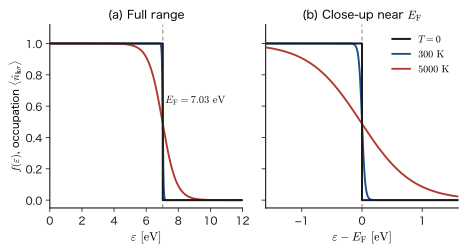
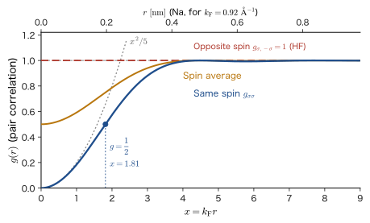
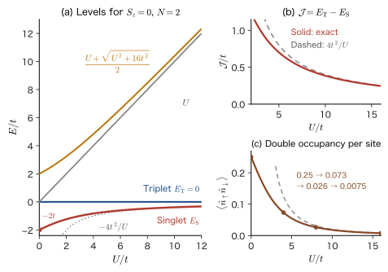
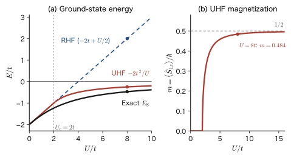

Chapter 59The Electron Gas and the Hubbard Model — The Fermi Sea, Electron–Hole Pairs, and Strong Correlation
A piece of copper wire of volume $1\ \mathrm{cm^3}$ contains about $8.5\times10^{22}$ electrons that take part in conduction. Of course, we cannot literally write down the wave function $\Psi(\bm{x}_1,\dots,\bm{x}_N)$ of that many electrons and solve the Schrödinger equation. And yet the electrical conduction, specific heat, and luster of metals, the emission color of semiconductors, and the difference between materials that become magnets and those that do not can all be understood surprisingly easily—not in terms of the motion of each individual electron, but in the language of “a collection of electrons.” In the previous three chapters we acquired that language—second quantization. In this chapter we put it to use. We actually write down and solve problems of solids containing many electrons in terms of the creation and annihilation operators $\hat{c}_{\bm{k}\sigma}^\dagger$, $\hat{c}_{\bm{k}\sigma}$, and read off the properties of materials (the energy of the electrons in a metal, the absorption edge and excitons of semiconductors, magnetism and the formation of insulators) numerically.
The idea that runs through this chapter is to fix a reference state and describe the “deviations” from it in the language of particles. The ground state of a metal that contains many electrons is the state in which electrons are packed tightly into the orbitals, in order from the lowest energy—the Fermi sea $\ket{\mathrm{FS}}$. If we regard this “sea” as a new vacuum, an excited state can be written as an “electron–hole pair”: one electron is lifted out of the sea, leaving behind in the sea a hole (a vacancy where an electron is missing). Although the total number of electrons does not change, the number of electrons above the sea and the number of holes in the sea each increase by one when light is absorbed and decrease when recombination occurs. This is nothing other than the form that the “processes in which the number of particles changes” seen in an earlier chapter (Chapter 56) take inside a solid. The process of creating electron–hole pairs by shining light on a semiconductor is combined with the photon operators in the next chapter, Chapter 60, and completed into the full picture of absorption and emission.
Let us also check the connections with, and the differences from, classical physics (AD 03). If we regard the electrons in a metal as a classical gas (the Drude model), the speed of their thermal motion at room temperature, $300\ \mathrm{K}$, should be about $\sqrt{3k_{\mathrm{B}}T/m_{\mathrm{e}}}\approx1.2\times10^{5}\ \mathrm{m/s}$. Because of the Pauli exclusion principle, however, the electrons fill the low-momentum states “first come, first served” even at $T=0$, and the speed of an electron on the Fermi surface of Cu is $1.57\times10^{6}\ \mathrm{m/s}$, about 13 times faster. This “motion that does not disappear even at absolute zero” determines many of the properties of metals (in Chapter 10, Section 10.7 of this book and in AD 03, Chapter 52, Section 52.8 (in Japanese), we obtained $E_{\mathrm{F}}$ by counting states; here we reread it in the language of operators). Moreover, a Coulomb repulsion acts between the electrons. Even though its magnitude is of the same order as the kinetic energy, why does the free-electron approximation hold reasonably well? One reason is the exchange energy and the “exchange hole” produced by the Pauli exclusion principle; the other is the screening of the Coulomb force (together with the suppression of scattering near the Fermi surface). In this chapter we calculate the former concretely and only state the result for the latter. And as the opposite extreme, in materials in which the electrons are localized on atoms and avoid one another, the Hubbard model, which consists of nothing but a small amount of hopping and the on-site Coulomb repulsion $U$, gives rise to insulators, antiferromagnetism, and Mott insulators—phenomena that cannot be explained by one-electron band theory.
- Be able to write the ground state of the free-electron gas $\ket{\mathrm{FS}}=\prod_{\abs{\bm{k}}\lt k_{\mathrm{F}},\sigma}\hat{c}_{\bm{k}\sigma}^\dagger\ket{0}$, to derive $k_{\mathrm{F}}=(3\pi^2n)^{1/3}$, $E_{\mathrm{F}}$, $v_{\mathrm{F}}$, $T_{\mathrm{F}}$, $\expval{E}/N=\tfrac35E_{\mathrm{F}}$, and the occupation number $\expval{\hat{n}_{\bm{k}\sigma}}=\theta(k_{\mathrm{F}}-\abs{\bm{k}})$, and to find the values for Na, Cu, and Al and $r_s$ numerically
- Be able to derive the excitation energy of an electron–hole pair $\hat{c}_{\bm{k}+\bm{q},\sigma}^\dagger\hat{c}_{\bm{k}\sigma}\ket{\mathrm{FS}}$ and the continuum for a fixed momentum $\hbar\bm{q}$ (upper bound $\hbar^2(q^2+2qk_{\mathrm{F}})/2m_{\mathrm{e}}$, lower bound $\max(0,\hbar^2(q^2-2qk_{\mathrm{F}})/2m_{\mathrm{e}})$). Be able to explain the hole operator $\hat{h}_{\bm{k}\sigma}^\dagger=\hat{c}_{-\bm{k},-\sigma}$ and the particle–hole transformation, and to state the relation to plasmons in a single phrase
- Be able to derive, in the jellium model, the exchange energy $\varepsilon_x=-3e_0^2k_{\mathrm{F}}/(16\pi^2\varepsilon_0)=-0.916/r_s$ (Ry) from the first-order expectation value of the Coulomb interaction, and to explain the minimum of its sum with the kinetic energy $2.21/r_s^2$ (at $r_s=4.83$) and the meaning of the exchange hole $g_{\sigma\sigma}(r)=1-[3j_1(x)/x]^2$. For the correlation energy, we only quote the result
- Be able to write the optical absorption of a semiconductor as $\hat{c}_{c,\bm{k}}^\dagger\hat{c}_{v,\bm{k}}\ket{\mathrm{FS}}$ (creation of one electron–hole pair, with conservation of $\bm{k}$), and to estimate numerically the wavelengths of the absorption edge (Si, GaAs, GaN), the partition of energy between the excited electron and the hole, and the binding energy and size of a Wannier–Mott exciton
- Be able to build the Hubbard model $\hat{H}=-t\sum(\hat{c}_{i\sigma}^\dagger\hat{c}_{j\sigma}+\mathrm{h.c.})+U\sum\hat{n}_{i\uparrow}\hat{n}_{i\downarrow}$ from the tight-binding model and the on-site Coulomb repulsion, and to derive $\varepsilon_{\bm{k}}=-2t\cos ka$, the exact solution for two sites $E_{\mathrm{S}}=(U-\sqrt{U^2+16t^2})/2$, the superexchange $\mathcal{J}=4t^2/U$, and the weight of the ionic component
- Be able to explain that in the Hartree–Fock decoupling (UHF) of the Hubbard model an antiferromagnetic (Néel) state appears for $U\gt2t$, the Stoner condition $U\,D(E_{\mathrm{F}})\gt1$, and the picture of the Mott insulator, and to state why strong correlation is hard to treat by mean-field theory or perturbation theory
Source notes: A chapter that supplements content not found in the original notes. Related: Yasuhide Mochizuki, “Physics Notes: Quantum Mechanics 3,” p. 61 (introduction of second quantization: the excited state of an electron is considered in terms of the annihilation of an electron and the creation of a hole), pp. 50–57 (Coulomb integral $U$ and exchange integral $J$).
59.1 The Free-Electron Gas and the Fermi Sea — Writing $\ket{\mathrm{FS}}$
59.1.1 Electrons in a box — writing the Hamiltonian with $\hat{c}^\dagger\hat{c}$
The first problem is to find what the ground state and the excited states of $N$ electrons look like when all interactions between the electrons are ignored. We regard a metal as a cube of side $L$ (volume $V=L^3$) and impose the same periodic boundary conditions as in Chapter 10, Section 10.7. The eigenstates of a single electron are box-normalized plane waves ($V^{-1/2}e^{i\bm{k}\cdot\bm{r}}$ in three dimensions):
\begin{equation} \psi_{\bm{k}}(\bm{r})=\frac{1}{\sqrt{V}}\,e^{i\bm{k}\cdot\bm{r}},\qquad \bm{k}=\frac{2\pi}{L}(n_x,n_y,n_z),\qquad \varepsilon_{\bm{k}}=\frac{\hbar^2k^2}{2m_{\mathrm{e}}}\qquad(n_x,n_y,n_z=0,\pm1,\pm2,\dots) \label{eq:59-orb} \end{equation}($k=\abs{\bm{k}}$. We denote the electron mass by $m_{\mathrm{e}}$. In this chapter we denote the effective mass in a crystal by $m^*$ to distinguish the two.) Electrons have spin, and for each $\bm{k}$ there are two states, with spin orientation $\sigma=\uparrow,\downarrow$. Hence a one-electron “spin orbital” is specified by the pair $(\bm{k},\sigma)$, and by the Pauli exclusion principle at most one electron can occupy a single spin orbital (here $\sigma$ is an index denoting the spin orientation $\uparrow,\downarrow$; this is a different use from the Pauli matrices $\sigma_x,\sigma_y,\sigma_z$ of Chapter 23).
Following the approach of Chapter 57, let $\hat{c}_{\bm{k}\sigma}^\dagger$ be the operator that puts one electron into the spin orbital $(\bm{k},\sigma)$, and $\hat{c}_{\bm{k}\sigma}$ the operator that removes one. They satisfy the anticommutation relations $\acomm{\hat{c}_{\bm{k}\sigma}}{\hat{c}_{\bm{k}'\sigma'}^\dagger}=\delta_{\bm{k}\bm{k}'}\delta_{\sigma\sigma'}$ and $\acomm{\hat{c}_{\bm{k}\sigma}}{\hat{c}_{\bm{k}'\sigma'}}=0$. Also, $\hat{n}_{\bm{k}\sigma}=\hat{c}_{\bm{k}\sigma}^\dagger\hat{c}_{\bm{k}\sigma}$ is the number operator that gives the number of electrons in that spin orbital ($0$ or $1$). By the second quantization of a one-body operator, which adds up the one-electron energy $\varepsilon_{\bm{k}}$ once for each electron (Chapter 58, Section 58.1), the Hamiltonian of the noninteracting electron gas can be written as
\begin{equation} \hat{H}_0=\sum_{\bm{k}\sigma}\varepsilon_{\bm{k}}\,\hat{c}_{\bm{k}\sigma}^\dagger\hat{c}_{\bm{k}\sigma}=\sum_{\bm{k}\sigma}\varepsilon_{\bm{k}}\,\hat{n}_{\bm{k}\sigma},\qquad \hat{N}=\sum_{\bm{k}\sigma}\hat{n}_{\bm{k}\sigma} \label{eq:59-H0} \end{equation}The state $\ket{\{n_{\bm{k}\sigma}\}}$ in the occupation-number representation (the list of the occupation numbers $0$ or $1$ of the spin orbitals) is an eigenstate of $\hat{H}_0$, and its eigenvalue is “the sum of $\varepsilon_{\bm{k}}$ over the electrons present.” Instead of writing down a wave function and adding up the energies of $N$ electrons, it is enough to say “which spin orbitals are filled.”
59.1.2 The ground state — filling from the lowest orbitals up
The ground state of $N$ electrons is the state in which $N$ spin orbitals are filled in order, starting from the orbital with the lowest energy $\varepsilon_{\bm{k}}=\hbar^2k^2/2m_{\mathrm{e}}$. Since the energy is determined by $k=\abs{\bm{k}}$ alone, the set of filled orbitals forms a sphere in $\bm{k}$ space. We denote its radius by $k_{\mathrm{F}}$.
Definition 59.1: Fermi sea $\ket{\mathrm{FS}}$, Fermi sphere, and Fermi wavenumber
The state in which every spin orbital with $\abs{\bm{k}}\lt k_{\mathrm{F}}$ contains exactly one electron and all the others are empty,
\begin{equation} \ket{\mathrm{FS}}=\prod_{\abs{\bm{k}}\lt k_{\mathrm{F}},\,\sigma}\hat{c}_{\bm{k}\sigma}^\dagger\,\ket{0} \label{eq:59-FS} \end{equation}is called the Fermi sea. The filled sphere $\abs{\bm{k}}\lt k_{\mathrm{F}}$ in $\bm{k}$ space is called the Fermi sphere, its surface $\abs{\bm{k}}=k_{\mathrm{F}}$ the Fermi surface, the radius $k_{\mathrm{F}}$ the Fermi wavenumber, and $E_{\mathrm{F}}=\hbar^2k_{\mathrm{F}}^2/2m_{\mathrm{e}}$ the Fermi energy.
Here $\ket{0}$ is the vacuum, which contains no electrons at all, and in this book the symbol is used only for the vacuum. $\ket{\mathrm{FS}}$ is a state containing $N$ electrons (not the vacuum). Changing the order of the factors in the product in Eq. \eqref{eq:59-FS} only changes the overall sign, so the order may be chosen arbitrarily.
Derivation: Determining $k_{\mathrm{F}}$ from the electron density $n=N/V$
By Eq. \eqref{eq:59-orb}, the allowed points $\bm{k}$ form a cubic lattice in $\bm{k}$ space, and the volume per point is $(2\pi/L)^3=(2\pi)^3/V$ (the three-dimensional version of Figure 10.9). The volume of a sphere of radius $k_{\mathrm{F}}$ is $\tfrac{4\pi}{3}k_{\mathrm{F}}^3$, so the number of $\bm{k}$ points inside the sphere is $\tfrac{4\pi}{3}k_{\mathrm{F}}^3\big/\big[(2\pi)^3/V\big]=Vk_{\mathrm{F}}^3/(6\pi^2)$. Since each $\bm{k}$ accommodates two spin states, the total number of electrons is
$$ N=2\times\frac{Vk_{\mathrm{F}}^3}{6\pi^2}=\frac{Vk_{\mathrm{F}}^3}{3\pi^2} $$Solving this with $n=N/V$ gives $k_{\mathrm{F}}^3=3\pi^2n$. For the formula for the volume of a sphere, see University Mathematics, Chapter 7, Section 7.7; for the way of counting in $k$ space, see Chapter 10, Section 10.7 (AD 03, Chapter 52, Section 52.8 (in Japanese), also has the same counting).
∎
Formula 59.1: Fermi wavenumber, Fermi energy, Fermi velocity, and Fermi temperature of the free-electron gas
\begin{equation} k_{\mathrm{F}}=(3\pi^2n)^{1/3},\qquad E_{\mathrm{F}}=\frac{\hbar^2k_{\mathrm{F}}^2}{2m_{\mathrm{e}}},\qquad v_{\mathrm{F}}=\frac{\hbar k_{\mathrm{F}}}{m_{\mathrm{e}}},\qquad T_{\mathrm{F}}=\frac{E_{\mathrm{F}}}{k_{\mathrm{B}}} \label{eq:59-kF} \end{equation}Here $n$ is the (number) density of electrons. $v_{\mathrm{F}}$ is the speed of an electron on the Fermi surface, and $T_{\mathrm{F}}$ is the Fermi temperature (the energy converted into a temperature). The Fermi wavelength $\lambda_{\mathrm{F}}=2\pi/k_{\mathrm{F}}$ corresponds to the de Broglie wavelength of an electron on the Fermi surface.
Another quantity that expresses the electron density is the Wigner–Seitz radius $r_s$. It is a dimensionless number determined by setting the volume per electron, $V/N=1/n$, equal to the volume $\tfrac{4\pi}{3}(r_sa_0)^3$ of a sphere of radius $r_sa_0$ ($a_0$ is the Bohr radius):
\begin{equation} r_s=\frac{1}{a_0}\left(\frac{3}{4\pi n}\right)^{1/3},\qquad k_{\mathrm{F}}a_0=\frac{1}{r_s}\left(\frac{9\pi}{4}\right)^{1/3}=\frac{1.9192}{r_s},\qquad E_{\mathrm{F}}=(k_{\mathrm{F}}a_0)^2\,\mathrm{Ry}=\frac{50.11\ \mathrm{eV}}{r_s^{2}} \label{eq:59-rs} \end{equation}The second equation follows from $k_{\mathrm{F}}^3=3\pi^2n=3\pi^2\cdot3/(4\pi r_s^3a_0^3)=9\pi/(4r_s^3a_0^3)$, and the third from $\hbar^2/(2m_{\mathrm{e}}a_0^2)=1\ \mathrm{Ry}=13.6057\ \mathrm{eV}$ ($E_{\mathrm{h}}/2$ in atomic units). $r_s$ expresses “how many times the Bohr radius the radius occupied by one electron is”: the smaller $r_s$ is, the higher the density and the larger $E_{\mathrm{F}}$ is ($\propto r_s^{-2}$). For metals, $r_s=2\sim6$ or so.
Example 59.1: Fermi wavenumber, energy, velocity, and temperature, and $r_s$, of Na, Cu, and Al
The densities of conduction electrons are Na $n=2.65\times10^{28}\ \mathrm{m^{-3}}$, Cu $n=8.47\times10^{28}\ \mathrm{m^{-3}}$, and Al $n=18.1\times10^{28}\ \mathrm{m^{-3}}$ (values computed from the measured atomic densities, taking one, one, and three valence electrons per atom, respectively). Treating the electrons as a free-electron gas, find $k_{\mathrm{F}}$, $E_{\mathrm{F}}$, $v_{\mathrm{F}}$, $T_{\mathrm{F}}$, and $r_s$.
Solution. We calculate Cu in detail. From the first equation of Eq. \eqref{eq:59-kF}, $3\pi^2n=29.609\times8.47\times10^{28}\ \mathrm{m^{-3}}=2.508\times10^{30}\ \mathrm{m^{-3}}$. Taking the cube root, $k_{\mathrm{F}}=1.358\times10^{10}\ \mathrm{m^{-1}}=1.36\ \mathrm{\text{Å}^{-1}}$ ($1\ \mathrm{\text{Å}}=10^{-10}\ \mathrm{m}$). Next,
$$ E_{\mathrm{F}}=\frac{\hbar^2k_{\mathrm{F}}^2}{2m_{\mathrm{e}}}=\frac{(1.0546\times10^{-34}\ \mathrm{J\,s})^2(1.358\times10^{10}\ \mathrm{m^{-1}})^2}{2\times9.109\times10^{-31}\ \mathrm{kg}}=1.126\times10^{-18}\ \mathrm{J}=7.03\ \mathrm{eV} $$(dividing by $1\ \mathrm{eV}=1.602\times10^{-19}\ \mathrm{J}$). $v_{\mathrm{F}}=\hbar k_{\mathrm{F}}/m_{\mathrm{e}}=1.0546\times10^{-34}\times1.358\times10^{10}/9.109\times10^{-31}=1.57\times10^{6}\ \mathrm{m/s}$, and $T_{\mathrm{F}}=E_{\mathrm{F}}/k_{\mathrm{B}}=1.126\times10^{-18}/1.3806\times10^{-23}=8.2\times10^{4}\ \mathrm{K}$. Also, $r_s=(3/4\pi n)^{1/3}/a_0=1.413\times10^{-10}\ \mathrm{m}/0.5292\times10^{-10}\ \mathrm{m}=2.67$ (this agrees with $k_{\mathrm{F}}a_0=1.9192/r_s$ in Eq. \eqref{eq:59-rs} as well, since $0.7187=1.9192/2.67$). Na and Al are calculated by the same procedure. Na: from $3\pi^2n=29.609\times2.65\times10^{28}=7.85\times10^{29}\ \mathrm{m^{-3}}$ we get $k_{\mathrm{F}}=0.922\ \mathrm{\text{Å}^{-1}}$ and $E_{\mathrm{F}}=(k_{\mathrm{F}}a_0)^2\,\mathrm{Ry}=(0.922\times0.5292)^2\times13.606\ \mathrm{eV}=3.24\ \mathrm{eV}$. Al: from $3\pi^2n=29.609\times18.1\times10^{28}=5.36\times10^{30}\ \mathrm{m^{-3}}$ we get $k_{\mathrm{F}}=1.750\ \mathrm{\text{Å}^{-1}}$ and $E_{\mathrm{F}}=(1.750\times0.5292)^2\times13.606\ \mathrm{eV}=11.67\ \mathrm{eV}$. $v_{\mathrm{F}}$, $T_{\mathrm{F}}$, and $r_s$ are found from the same formulas as for Cu, giving the values in the following table.
| Metal | $n\ [10^{28}\ \mathrm{m^{-3}}]$ | $k_{\mathrm{F}}\ [\mathrm{\text{Å}^{-1}}]$ | $E_{\mathrm{F}}\ [\mathrm{eV}]$ | $v_{\mathrm{F}}\ [10^6\ \mathrm{m/s}]$ | $T_{\mathrm{F}}\ [\mathrm{K}]$ | $r_s$ |
|---|---|---|---|---|---|---|
| Na | 2.65 | 0.92 | 3.24 | 1.07 | $3.8\times10^4$ | 3.93 |
| Cu | 8.47 | 1.36 | 7.03 | 1.57 | $8.2\times10^4$ | 2.67 |
| Al | 18.1 | 1.75 | 11.67 | 2.03 | $1.35\times10^5$ | 2.07 |
That $E_{\mathrm{F}}$ is a few eV to 10 eV and $T_{\mathrm{F}}$ is $10^4\sim10^5\ \mathrm{K}$, far higher than room temperature ($300\ \mathrm{K}$), is what it means to say that the electrons in a metal are “degenerate” (degenerate here does not mean that “there are several states of the same energy”; it means that, because $k_{\mathrm{B}}T\ll E_{\mathrm{F}}$, the electrons are governed by the Pauli exclusion principle and the distribution of occupation numbers remains step-shaped). The denser the metal, as with Al, the larger $E_{\mathrm{F}}$ and $v_{\mathrm{F}}$ are and the smaller $r_s$ is.
(Note: The actual Fermi surface of Cu touches the boundary of the Brillouin zone and deviates from a sphere. The values here are only a rough guide, for the case in which the conduction electrons are free electrons, one per atom.)
59.1.3 Average kinetic energy $\expval{E}/N=\tfrac35E_{\mathrm{F}}$
The energy of the ground state is the sum of $\varepsilon_{\bm{k}}$ over the filled spin orbitals. As $L\to\infty$ the allowed points $\bm{k}$ become dense, so we replace the sum by an integral: $\sum_{\bm{k}}\to V\int\dfrac{\dd^3k}{(2\pi)^3}$ (the reciprocal of the volume per point, $(2\pi)^3/V$). Using spherical coordinates, $\dd^3k=4\pi k^2\dd k$, we obtain
\begin{equation} \mel{\mathrm{FS}}{\hat{H}_0}{\mathrm{FS}}=2\sum_{\abs{\bm{k}}\lt k_{\mathrm{F}}}\varepsilon_{\bm{k}}=2V\!\int_0^{k_{\mathrm{F}}}\!\frac{4\pi k^2\dd k}{(2\pi)^3}\frac{\hbar^2k^2}{2m_{\mathrm{e}}}=\frac{V}{\pi^2}\frac{\hbar^2}{2m_{\mathrm{e}}}\frac{k_{\mathrm{F}}^5}{5} \label{eq:59-Etot} \end{equation}We now divide this by $N=Vk_{\mathrm{F}}^3/(3\pi^2)$.
Formula 59.2: Average kinetic energy per electron
\begin{equation} \frac{\expval{E}}{N}=\frac{3}{5}\,\frac{\hbar^2k_{\mathrm{F}}^2}{2m_{\mathrm{e}}}=\frac35E_{\mathrm{F}} \label{eq:59-avgE} \end{equation}Dividing Eq. \eqref{eq:59-Etot} by $N$ gives $\dfrac{V}{\pi^2}\dfrac{\hbar^2}{2m_{\mathrm{e}}}\dfrac{k_{\mathrm{F}}^5}{5}\cdot\dfrac{3\pi^2}{Vk_{\mathrm{F}}^3}=\dfrac35\dfrac{\hbar^2k_{\mathrm{F}}^2}{2m_{\mathrm{e}}}$. The factor $\tfrac35$ is a consequence of the fact that the average of $\abs{\bm{k}}^2$ over the Fermi sphere is $\int_0^{k_{\mathrm{F}}}k^4\dd k\big/\int_0^{k_{\mathrm{F}}}k^2\dd k=\tfrac35k_{\mathrm{F}}^2$. Inside the Fermi sphere there are more states at higher $k$ (the area is $\propto k^2$), so the average is larger than half of $E_{\mathrm{F}}$.
Intuition: Motion that does not vanish even at absolute zero, and degeneracy pressure
In Cu, $\tfrac35E_{\mathrm{F}}=4.22\ \mathrm{eV}$, which converted to a temperature is $\tfrac35T_{\mathrm{F}}\approx4.9\times10^4\ \mathrm{K}$. For a classical gas, the motion stops at $T=0$. In an electron gas, because of the Pauli exclusion principle, the electrons cannot enter the same state and have no choice but to fill the orbitals one after another up to the higher ones. This kinetic energy increases when the gas is compressed ($E_{\mathrm{F}}\propto n^{2/3}$), so a degeneracy pressure $P=-\partial\expval{E}/\partial V=\tfrac25nE_{\mathrm{F}}$ acts on the electron gas. In Cu, $P\approx3.8\times10^{10}\ \mathrm{Pa}=38\ \mathrm{GPa}$, and converting this to the bulk modulus gives $\tfrac23nE_{\mathrm{F}}\approx64\ \mathrm{GPa}$, which is of the same order as the measured value of about $140\ \mathrm{GPa}$. A solid does not collapse because it is supported not only by the electrostatic attraction between the atomic nuclei but also by the repulsion due to the Pauli exclusion principle for the electrons.
59.1.4 Occupation number $\expval{\hat{n}_{\bm{k}\sigma}}=\theta(k_{\mathrm{F}}-\abs{\bm{k}})$ and finite temperature
The Fermi sea is a state in the occupation-number representation, so the occupation number of each spin orbital is definite. $\hat{n}_{\bm{k}\sigma}\ket{\mathrm{FS}}$ is $\ket{\mathrm{FS}}$ itself if $\abs{\bm{k}}\lt k_{\mathrm{F}}$ (the orbital is filled, and $\hat{n}=1$), and it is $0$ if $\abs{\bm{k}}\gt k_{\mathrm{F}}$ (the orbital is empty, and $\hat{n}=0$). Hence, using the step function $\theta(x)$ (equal to $1$ for $x\gt0$ and to $0$ for $x\lt0$; not to be confused with the angle $\theta$ of polar coordinates), the occupation number is given by
\begin{equation} \expval{\hat{n}_{\bm{k}\sigma}}=\mel{\mathrm{FS}}{\hat{c}_{\bm{k}\sigma}^\dagger\hat{c}_{\bm{k}\sigma}}{\mathrm{FS}}=\theta\big(k_{\mathrm{F}}-\abs{\bm{k}}\big) \label{eq:59-nk} \end{equation}This tells us whether a single spin orbital is filled; it is not the probability distribution of the momentum of one electron. Summing over all of them gives the number of electrons: $\sum_{\bm{k}\sigma}\expval{\hat{n}_{\bm{k}\sigma}}=N$. That the boundary in momentum space is this clear-cut is what it means for the Fermi surface to be sharp (when there are interactions between electrons, the size of this jump becomes smaller than $1$. The size $Z$ of this jump is called the quasiparticle weight; it becomes smaller the stronger the interaction, but as long as $Z\gt0$ the Fermi surface continues to exist. See AD 08).
At finite temperature, by the factorization of the grand partition function that we saw in the earlier Chapter 57 (Section 57.3), the average occupation number of each spin orbital is the Fermi–Dirac distribution (for the derivation, see AD 03, Chapter 52, Section 52.5 (in Japanese)):
\begin{equation} \expval{\hat{n}_{\bm{k}\sigma}}_T=f(\varepsilon_{\bm{k}})=\frac{1}{e^{(\varepsilon_{\bm{k}}-\mu)/k_{\mathrm{B}}T}+1} \label{eq:59-fermi} \end{equation}Here $\mu$ is the chemical potential, and for $k_{\mathrm{B}}T\ll E_{\mathrm{F}}$ we have $\mu\approx E_{\mathrm{F}}$ (the correction is of the order of $(k_{\mathrm{B}}T/E_{\mathrm{F}})^2$). The width over which the step is “blurred” is only a few times $k_{\mathrm{B}}T$.

Example 59.2: Very few electrons in Cu at room temperature can move
In Cu at room temperature ($300\ \mathrm{K}$), (1) what percentage of $E_{\mathrm{F}}$ is $k_{\mathrm{B}}T$? (2) Roughly what percentage of all the electrons are excited by heat near the Fermi surface? (3) If we regard the electrons as a classical gas, the speed of thermal motion $\sqrt{3k_{\mathrm{B}}T/m_{\mathrm{e}}}$ is what fraction of $v_{\mathrm{F}}$?
Solution. (1) $k_{\mathrm{B}}T=1.3806\times10^{-23}\times300=4.14\times10^{-21}\ \mathrm{J}=25.9\ \mathrm{meV}$. Relative to $E_{\mathrm{F}}=7.03\ \mathrm{eV}$ of Example 59.1, $k_{\mathrm{B}}T/E_{\mathrm{F}}=0.0259/7.03=3.7\times10^{-3}=0.37\ \%$ (the same as $=300/T_{\mathrm{F}}=300/8.2\times10^4$). That is, it is about $0.4\ \%$.
(2) Only the electrons within a range of about $k_{\mathrm{B}}T$ of the Fermi surface can be excited. From the three-dimensional density of states $g(E)\propto\sqrt{E}$, the number of states per unit energy near $E_{\mathrm{F}}$ is $g(E_{\mathrm{F}})=\tfrac32N/E_{\mathrm{F}}$ (the derivative of $N(E)\propto E^{3/2}$; AD 03, Section 52.8 (in Japanese)), so the fraction of electrons within a range of $k_{\mathrm{B}}T$ is $g(E_{\mathrm{F}})k_{\mathrm{B}}T/N=\tfrac32k_{\mathrm{B}}T/E_{\mathrm{F}}=0.55\ \%$. The remaining roughly $99.5\ \%$ of the electrons cannot move with an energy of the order of the thermal energy, because the orbitals just above them are filled. This is why the electronic specific heat is small compared with that of a classical gas, which has $\tfrac12k_{\mathrm{B}}$ per degree of freedom ($C_{\mathrm{el}}=\tfrac{\pi^2}{2}Nk_{\mathrm{B}}T/T_{\mathrm{F}}$; AD 03, Section 52.9 (in Japanese); AD 06, Chapter 15, Section 15.5 (in Japanese)).
(3) $\sqrt{3k_{\mathrm{B}}T/m_{\mathrm{e}}}=\sqrt{3\times4.14\times10^{-21}/9.109\times10^{-31}}=1.17\times10^{5}\ \mathrm{m/s}$, which is about $1/13$ of $v_{\mathrm{F}}=1.57\times10^6\ \mathrm{m/s}$. The electrons that carry the current are those on the Fermi surface, with speed $v_{\mathrm{F}}$, and this speed hardly depends on the temperature.
Application: The Fermi surface is “the surface that makes a metal a metal”
The electrical conduction, specific heat, thermoelectric power, and reflection of light (metallic luster) of a metal are all determined by the behavior of the electrons around the Fermi surface. AD 06, “Solid-State Physics” (Chapter 15, Section 15.2 (in Japanese)) goes on to the story of determining the shape of the Fermi surface (its deviation from a sphere) by experiment. In this chapter, we take this “sphere” itself as the reference state (something like the vacuum), and write down the excitations in the following sections.
Related simulator: Green's Functions and Feynman Diagrams (put one electron into the noninteracting Fermi sea, and then try annihilating it).
59.2 Electron–Hole Pair Excitations — Excitations around the Fermi Surface
59.2.1 Writing excitations with $\hat{c}^\dagger\hat{c}$
What is the state that can be made from the Fermi sea $\ket{\mathrm{FS}}$ with the smallest excitation energy? The simplest excitation is to take one electron out of a spin orbital $(\bm{k},\sigma)$ inside the Fermi sphere and move it to an empty spin orbital $(\bm{k}+\bm{q},\sigma)$ outside. The operator that removes the electron is $\hat{c}_{\bm{k}\sigma}$ and the operator that inserts it is $\hat{c}_{\bm{k}+\bm{q},\sigma}^\dagger$, so we make the following definition.
Definition 59.2: Electron–hole pair
For $\bm{q}\ne0$, $\abs{\bm{k}}\lt k_{\mathrm{F}}$, and $\abs{\bm{k}+\bm{q}}\gt k_{\mathrm{F}}$, the state
\begin{equation} \ket{\bm{k}\to\bm{k}+\bm{q},\sigma}=\hat{c}_{\bm{k}+\bm{q},\sigma}^\dagger\,\hat{c}_{\bm{k}\sigma}\,\ket{\mathrm{FS}} \label{eq:59-pair} \end{equation}is called an electron–hole pair state. The reason is that it is a pair made of an electron outside the Fermi sphere and a vacancy (hole) opened up inside.
Whether this state “exists or not” is decided by the Pauli exclusion principle. If $\abs{\bm{k}}\gt k_{\mathrm{F}}$, there is no electron to remove in the first place, so $\hat{c}_{\bm{k}\sigma}\ket{\mathrm{FS}}=0$. If $\abs{\bm{k}+\bm{q}}\lt k_{\mathrm{F}}$, the destination is already filled, so $\hat{c}_{\bm{k}+\bm{q},\sigma}^\dagger\hat{c}_{\bm{k}\sigma}\ket{\mathrm{FS}}=0$. When neither is the case, the square of the norm of the state is, using $\hat{c}_{\bm{k}+\bm{q},\sigma}\hat{c}_{\bm{k}+\bm{q},\sigma}^\dagger=1-\hat{n}_{\bm{k}+\bm{q},\sigma}$,
$$ \mel{\mathrm{FS}}{\hat{c}_{\bm{k}\sigma}^\dagger\hat{c}_{\bm{k}+\bm{q},\sigma}\hat{c}_{\bm{k}+\bm{q},\sigma}^\dagger\hat{c}_{\bm{k}\sigma}}{\mathrm{FS}}=\mel{\mathrm{FS}}{\hat{c}_{\bm{k}\sigma}^\dagger\big(1-\hat{n}_{\bm{k}+\bm{q},\sigma}\big)\hat{c}_{\bm{k}\sigma}}{\mathrm{FS}}=n_{\bm{k}\sigma}\big(1-n_{\bm{k}+\bm{q},\sigma}\big) $$where, since $\bm{q}\ne0$, $\hat{n}_{\bm{k}+\bm{q},\sigma}$ commutes with $\hat{c}_{\bm{k}\sigma}$, and $n_{\bm{k}\sigma}=\theta(k_{\mathrm{F}}-\abs{\bm{k}})$ is the value given in Eq. \eqref{eq:59-nk}. Therefore the result is $1$ only when “the electron is inside and the outside is empty,” and $0$ otherwise.
Since this state is a Fock state in the occupation-number representation, it is an eigenstate of $\hat{H}_0$, and its excitation energy is simply “subtract the energy of the orbital we took the electron out of and add the energy of the orbital we put it into”:
\begin{equation} \hbar\omega=\varepsilon_{\bm{k}+\bm{q}}-\varepsilon_{\bm{k}}=\frac{\hbar^2}{2m_{\mathrm{e}}}\big(2\bm{k}\cdot\bm{q}+q^2\big) \label{eq:59-pairE} \end{equation}The total momentum $\hat{\bm{P}}=\sum_{\bm{k}\sigma}\hbar\bm{k}\,\hat{n}_{\bm{k}\sigma}$ is $0$ in the Fermi sea because the Fermi sea is spherically symmetric. To this we add $\hbar(\bm{k}+\bm{q})$ and subtract $\hbar\bm{k}$, so the total momentum of the pair state is $\hbar\bm{q}$, and the total spin does not change. The total number of electrons $N$ does not change either. What has been added is one “electron outside the Fermi sphere” and one “hole inside the Fermi sphere.”
59.2.2 The continuum of pairs of momentum $\hbar\bm{q}$
When the momentum $\hbar\bm{q}$ is fixed, what range of values does the pair excitation energy, Eq. \eqref{eq:59-pairE}, take? The value changes with where $\bm{k}$ lies in the crescent region (Figure 59.2), and for $L\to\infty$ the points $\bm{k}$ are dense, so the values are distributed continuously. That range is given by the following theorem.
Theorem 59.1: The continuum of electron–hole pairs
The excitation energy $\hbar\omega$ of an electron–hole pair of momentum $\hbar\bm{q}$ (magnitude $q=\abs{\bm{q}}$) takes every value in the range:
\begin{equation} \max\!\left(0,\ \frac{\hbar^2(q^2-2qk_{\mathrm{F}})}{2m_{\mathrm{e}}}\right)\ \le\ \hbar\omega\ \le\ \frac{\hbar^2(q^2+2qk_{\mathrm{F}})}{2m_{\mathrm{e}}} \label{eq:59-cont} \end{equation}For $q\lt2k_{\mathrm{F}}$ the lower bound is $0$.
Derivation
Writing Eq. \eqref{eq:59-pairE} in terms of the angle $\vartheta$ between $\bm{k}$ and $\bm{q}$, we have $\hbar\omega=\dfrac{\hbar^2}{2m_{\mathrm{e}}}(q^2+2qk\cos\vartheta)$.
Upper bound. $\hbar\omega$ is larger the larger $k\cos\vartheta$ is. The maximum value of this quantity for $\abs{\bm{k}}\le k_{\mathrm{F}}$ is $k_{\mathrm{F}}$ ($\bm{k}\parallel\bm{q}$, $\abs{\bm{k}}=k_{\mathrm{F}}$), and in that case $\abs{\bm{k}+\bm{q}}=k_{\mathrm{F}}+q\gt k_{\mathrm{F}}$, so the condition for forming a pair is also satisfied. Hence the upper bound is $\hbar^2(q^2+2qk_{\mathrm{F}})/2m_{\mathrm{e}}$.
Lower bound. The condition $\abs{\bm{k}+\bm{q}}\gt k_{\mathrm{F}}$ means $\varepsilon_{\bm{k}+\bm{q}}\gt E_{\mathrm{F}}$, so $\hbar\omega=\varepsilon_{\bm{k}+\bm{q}}-\varepsilon_{\bm{k}}\gt E_{\mathrm{F}}-\varepsilon_{\bm{k}}\ge0$, and thus $\hbar\omega\gt0$. (i) For $q\le2k_{\mathrm{F}}$: there are points on the Fermi surface ($\abs{\bm{k}}=k_{\mathrm{F}}$) at which $\abs{\bm{k}+\bm{q}}\ge k_{\mathrm{F}}$. The condition $\abs{\bm{k}+\bm{q}}^2-k_{\mathrm{F}}^2=2\bm{k}\cdot\bm{q}+q^2\ge0$ is equivalent to $\cos\vartheta\ge-q/(2k_{\mathrm{F}})$, and since $-q/(2k_{\mathrm{F}})\ge-1$, a $\vartheta$ satisfying it exists. Near such a point $\hbar\omega$ comes arbitrarily close to $0$ (lower bound $0$). (ii) For $q\gt2k_{\mathrm{F}}$: if $\abs{\bm{k}}\lt k_{\mathrm{F}}$, then $\abs{\bm{k}+\bm{q}}\ge q-\abs{\bm{k}}\gt q-k_{\mathrm{F}}\gt k_{\mathrm{F}}$, so the condition for forming a pair is always satisfied. The minimum of $\hbar\omega$ occurs at $\cos\vartheta=-1$, $\abs{\bm{k}}=k_{\mathrm{F}}$ ($\bm{k}\parallel-\bm{q}$), and the lower bound is $\hbar^2(q^2-2qk_{\mathrm{F}})/2m_{\mathrm{e}}\gt0$.
The allowed region of $\bm{k}$ is connected and $\hbar\omega$ is a continuous function of $\bm{k}$, so every value between the upper bound and the lower bound is taken.
∎
Measuring $\hbar\omega$ in units of $E_{\mathrm{F}}=\hbar^2k_{\mathrm{F}}^2/2m_{\mathrm{e}}$, with $x=q/k_{\mathrm{F}}$, the upper bound is $x^2+2x$ and the lower bound is $\max(0,x^2-2x)$ (Figure 59.3). For $q\ll k_{\mathrm{F}}$ the upper bound is $\hbar v_{\mathrm{F}}q+\hbar^2q^2/2m_{\mathrm{e}}\approx\hbar v_{\mathrm{F}}q$ (using $\hbar v_{\mathrm{F}}k_{\mathrm{F}}=2E_{\mathrm{F}}$), and the continuum becomes a thin wedge $0\le\hbar\omega\le\hbar v_{\mathrm{F}}q$. In other words, long-wavelength pair excitations are confined to the low-energy side. The value $q=2k_{\mathrm{F}}$ (the diameter of the Fermi sphere) is a special wavenumber: beyond it the lower bound lifts off from $0$ (it is the largest momentum transfer that can connect two points on the Fermi surface with no energy).
![The continuum of electron–hole pairs. The horizontal axis is q measured in units of k_F, and the vertical axis is ħω measured in units of E_F. The region between the upper-bound parabola x²+2x and the lower bound max(0, x²−2x) is the continuum; for small q the upper bound is close to the straight line 2x and the continuum is a thin wedge. When x exceeds 2, the lower bound lifts off from 0. The plasmon of Al, ħω_p=1.35 E_F, lies above the continuum at small q and enters the continuum near q = 0.64 k_F. The right vertical axis shows the values converted to eV using E_F=7.03 eV of Cu; the plasmon of Al is read on the left vertical axis](figs/ch59_fig59-3.svg)
Example 59.3: Energy range of electron–hole pairs in Cu
Treating Cu as a free-electron metal ($E_{\mathrm{F}}=7.03\ \mathrm{eV}$, $k_{\mathrm{F}}=1.36\ \mathrm{\text{Å}^{-1}}$), find the energy range of electron–hole pairs of momentum $\hbar q$ for (1) $q=0.5k_{\mathrm{F}}$, (2) $q=k_{\mathrm{F}}$, (3) $q=3k_{\mathrm{F}}$. Also compare the upper bound in (1) with the $\hbar v_{\mathrm{F}}q$ approximation.
Solution. Measured in units of $E_{\mathrm{F}}$, Eq. \eqref{eq:59-cont} gives the upper bound $x^2+2x$ and the lower bound $\max(0,x^2-2x)$ ($x=q/k_{\mathrm{F}}$). (1) $x=0.5$: upper bound $0.25+1=1.25$, lower bound $\max(0,0.25-1)=0$. Multiplying by $E_{\mathrm{F}}=7.03\ \mathrm{eV}$, we get $0\le\hbar\omega\le8.79\ \mathrm{eV}$. (2) $x=1$: upper bound $1+2=3$, lower bound $\max(0,1-2)=0$. Hence $0\le\hbar\omega\le21.10\ \mathrm{eV}$. (3) $x=3$: upper bound $9+6=15$, lower bound $9-6=3$, so $21.1\ \mathrm{eV}\le\hbar\omega\le105.5\ \mathrm{eV}$. For $q\gt2k_{\mathrm{F}}$ the lower bound is not $0$: one cannot hand over a momentum $q$ without paying energy.
The approximate upper bound in (1) is $\hbar v_{\mathrm{F}}q=2E_{\mathrm{F}}x=7.03\ \mathrm{eV}$, which is smaller than the exact upper bound $8.79\ \mathrm{eV}$ by $1.76\ \mathrm{eV}$ ($=E_{\mathrm{F}}x^2$, the $\hbar^2q^2/2m_{\mathrm{e}}$ term). The smaller $q$ is, the smaller this difference becomes in relative terms.
59.2.3 The density operator and the superposition of electron–hole pairs
Electron–hole pairs are also related to the operator that creates a wave of electron density. The Fourier component of the density operator introduced in Chapter 58, Section 58.6 is $\hat{\rho}_{\bm{q}}=\sum_{\bm{k}\sigma}\hat{c}_{\bm{k}\sigma}^\dagger\hat{c}_{\bm{k}+\bm{q},\sigma}$ (the volume integral of the electron density $\hat{\rho}(\bm{r})$ multiplied by $e^{-i\bm{q}\cdot\bm{r}}$); its conjugate $\hat{\rho}_{-\bm{q}}=\hat{\rho}_{\bm{q}}^\dagger=\sum_{\bm{k}\sigma}\hat{c}_{\bm{k}+\bm{q},\sigma}^\dagger\hat{c}_{\bm{k}\sigma}$ moves an electron from $\bm{k}$ to $\bm{k}+\bm{q}$ by handing over momentum $\hbar\bm{q}$. When it acts on the Fermi sea, all the pair states of Eq. \eqref{eq:59-pair} add up:
\begin{equation} \hat{\rho}_{-\bm{q}}\ket{\mathrm{FS}}=\sum_{\bm{k}\sigma}\hat{c}_{\bm{k}+\bm{q},\sigma}^\dagger\hat{c}_{\bm{k}\sigma}\ket{\mathrm{FS}}=\sum_{\bm{k}\sigma}\ket{\bm{k}\to\bm{k}+\bm{q},\sigma} \label{eq:59-rho} \end{equation}(the terms with $n_{\bm{k}\sigma}(1-n_{\bm{k}+\bm{q},\sigma})=0$ are $0$, so only the terms of the $(\bm{k},\sigma)$ that satisfy the condition remain). For $\bm{q}\ne0$, pair states with different $(\bm{k},\sigma)$ are mutually orthogonal, so the squared norm of Eq. \eqref{eq:59-rho} equals the number of points (counting spin) in the crescent region: $N\,S(\bm{q})=\sum_{\bm{k}\sigma}n_{\bm{k}\sigma}(1-n_{\bm{k}+\bm{q},\sigma})$. This $S(\bm{q})$ is the “number of pairs” per electron and is called the static structure factor.
Derivation: Finding $S(q)$ from the volume of the overlap of spheres
The crescent region is the part of the Fermi sphere that remains after removing its intersection (a lens) with “a sphere of the same radius whose center is shifted to $-\bm{q}$” (Figure 59.2). For $q\lt2k_{\mathrm{F}}$ the lens consists of two spherical caps of height $h=k_{\mathrm{F}}-q/2$, and the volume of one spherical cap is $\tfrac{\pi}{3}h^2(3k_{\mathrm{F}}-h)$, so the volume of the lens is
$$ V_{\mathrm{lens}}=\frac{2\pi}{3}h^2(3k_{\mathrm{F}}-h)=\frac{2\pi}{3}\Big(k_{\mathrm{F}}-\frac q2\Big)^2\Big(2k_{\mathrm{F}}+\frac q2\Big)=\frac{\pi}{12}(4k_{\mathrm{F}}+q)(2k_{\mathrm{F}}-q)^2 $$The ratio to the volume of the Fermi sphere, $\tfrac{4\pi}{3}k_{\mathrm{F}}^3$, is, with $x=q/k_{\mathrm{F}}$, $V_{\mathrm{lens}}/V_{\mathrm{FS}}=\tfrac{1}{16}(4+x)(2-x)^2=1-\tfrac34x+\tfrac{1}{16}x^3$. Since the number of points in the crescent region is $1-V_{\mathrm{lens}}/V_{\mathrm{FS}}$ times $N$, we obtain
\begin{equation} S(q)=\frac34\frac{q}{k_{\mathrm{F}}}-\frac{1}{16}\left(\frac{q}{k_{\mathrm{F}}}\right)^3\quad(q\le2k_{\mathrm{F}}),\qquad S(q)=1\quad(q\ge2k_{\mathrm{F}}) \label{eq:59-Sq} \end{equation}For $q\ge2k_{\mathrm{F}}$ there is no lens, so every electron can form a pair ($S=1$).
∎
When $q$ is small, $S(q)\approx\tfrac34q/k_{\mathrm{F}}$ is small: a long-wavelength density wave can move only the electrons very close to the Fermi surface. This is also an expression of the fact that the Pauli exclusion principle puts the electrons in an orderly arrangement and suppresses the fluctuations of the density. The weight of the response to this $\hat{\rho}_{-\bm{q}}\ket{\mathrm{FS}}$ is the Lindhard function in the companion volume (AD 08, “Linear Response Theory”). Writing down only the form of the result ($\eta\to+0$ is the same as the adiabatic switching factor of Chapter 55; the details of the conventions follow AD 08), we have
\begin{equation} \chi^0(\bm{q},\omega)=\frac{2}{V}\sum_{\bm{k}}\frac{n_{\bm{k}}-n_{\bm{k}+\bm{q}}}{\hbar\omega-(\varepsilon_{\bm{k}+\bm{q}}-\varepsilon_{\bm{k}})+i\eta} \label{eq:59-lindhard} \end{equation}Here the factor 2 comes from the sum over spin, and $n_{\bm{k}}=\theta(k_{\mathrm{F}}-\abs{\bm{k}})$. The denominator is exactly the electron–hole pair excitation energy, Eq. \eqref{eq:59-pairE}, and the numerator $n_{\bm{k}}-n_{\bm{k}+\bm{q}}$ is $+1$ for the terms that can form a pair (from inside to outside) and $-1$ for the process in the opposite direction, and it is $0$ if both states are filled or both are empty; this is the Pauli effect. For $\omega\gt0$ the imaginary part differs from $0$ only inside the continuum of Eq. \eqref{eq:59-cont}. Note that Eq. \eqref{eq:59-lindhard} is written with the sign of the AD 08 convention (the style that writes the external field as $+f\hat{B}$), and $\chi^0\lt0$ in the static limit and $\mathrm{Im}\,\chi^0\lt0$ for $\omega\gt0$. The susceptibility written in the convention of Chapter 54 of this book (external field $-F\hat{B}$; see the box in Section 54.2) has the opposite overall sign.
Example 59.4: The number of electron–hole pairs $S(q)$
For Cu (free electrons), find the number $S(q)$ of electron–hole pairs per electron at $q=0.5k_{\mathrm{F}}$ and $q=k_{\mathrm{F}}$. Also, for $q=0.5k_{\mathrm{F}}$ and $N=10^{23}$ electrons, state the approximate number of pairs.
Solution. From Eq. \eqref{eq:59-Sq}, for $x=0.5$: $S=\tfrac34\cdot0.5-\tfrac1{16}\cdot0.125=0.375-0.0078=0.367$. For $x=1$: $S=0.75-0.0625=0.6875$. At $q=0.5k_{\mathrm{F}}$, about $37\ \%$ of all electrons are candidates for forming pairs, and for $N=10^{23}$ there are $3.7\times10^{22}$ pair states. The superposition of all these pair states is $\hat{\rho}_{-\bm{q}}\ket{\mathrm{FS}}$. At $q=k_{\mathrm{F}}$ the fraction is about $69\ \%$.
59.2.4 The hole operator and the particle–hole transformation
Let us build a language that treats the “hole” side of a pair like an independent particle. If we remove one electron $(\bm{k},\sigma)$ ($\abs{\bm{k}}\lt k_{\mathrm{F}}$) from the Fermi sea, one electron charge $-e_0$ is missing, so the remaining system has charge $+e_0$, momentum $-\hbar\bm{k}$ (the total momentum minus $\hbar\bm{k}$), and spin $-\sigma$ (the total spin minus $\sigma$). Treating this “trace of the missing electron” as a single particle gives the hole. In order to write the hole's momentum and spin using the hole's own values directly as labels, we define the following.
Definition 59.3: Creation and annihilation operators for holes
For the spin orbitals with $\abs{\bm{k}}\lt k_{\mathrm{F}}$,
\begin{equation} \hat{h}_{\bm{k}\sigma}^\dagger\equiv\hat{c}_{-\bm{k},-\sigma},\qquad \hat{h}_{\bm{k}\sigma}\equiv\hat{c}_{-\bm{k},-\sigma}^\dagger \label{eq:59-hole} \end{equation}$\hat{h}_{\bm{k}\sigma}^\dagger$ is the operator that creates one hole with momentum $\hbar\bm{k}$ and spin $\sigma$ (that is, removes one electron $(-\bm{k},-\sigma)$). The $h$ in $\hat{h}$ is the initial letter of “hole” and is unrelated to the Planck constant $h$ ($\hbar=h/2\pi$). For $\abs{\bm{k}}\gt k_{\mathrm{F}}$ we have $\hat{c}_{-\bm{k},-\sigma}\ket{\mathrm{FS}}=0$, and the hole picture is not used (there the electron operators $\hat{c}_{\bm{k}\sigma}$ are used as they are).
$\hat{h}$ is also a fermion operator. We have $\acomm{\hat{h}_{\bm{k}\sigma}}{\hat{h}_{\bm{k}'\sigma'}^\dagger}=\acomm{\hat{c}_{-\bm{k},-\sigma}^\dagger}{\hat{c}_{-\bm{k}',-\sigma'}}=\delta_{\bm{k}\bm{k}'}\delta_{\sigma\sigma'}$, and $\acomm{\hat{h}}{\hat{h}}=0$ holds similarly. The “vacuum” once the holes are defined is the Fermi sea itself: for $\abs{\bm{k}}\gt k_{\mathrm{F}}$, $\hat{c}_{\bm{k}\sigma}\ket{\mathrm{FS}}=0$ (there are no electrons), and for $\abs{\bm{k}}\lt k_{\mathrm{F}}$, $\hat{h}_{\bm{k}\sigma}\ket{\mathrm{FS}}=\hat{c}_{-\bm{k},-\sigma}^\dagger\ket{\mathrm{FS}}=0$ (the orbital is already filled, so no electron can be put in; that is, there is no hole). In other words, $\ket{\mathrm{FS}}$ is the state in which “outside the Fermi surface there is not a single particle (electron), and inside there is not a single hole,” so it is a vacuum for both electrons and holes. In this view, the pair state of Eq. \eqref{eq:59-pair} is rewritten as the state $\hat{c}_{\bm{k}+\bm{q},\sigma}^\dagger\hat{h}_{-\bm{k},-\sigma}^\dagger\ket{\mathrm{FS}}$, in which one electron $(\bm{k}+\bm{q},\sigma)$ and one hole $(-\bm{k},-\sigma)$ have been created. The total momentum is $\hbar(\bm{k}+\bm{q})-\hbar\bm{k}=\hbar\bm{q}$, and the total spin is $\sigma-\sigma=0$.
Theorem 59.2: Particle–hole transformation
Rewriting $\hat{H}_0$ in terms of electrons with $\abs{\bm{k}}\gt k_{\mathrm{F}}$ and holes with $\abs{\bm{k}}\lt k_{\mathrm{F}}$, we obtain
\begin{equation} \hat{H}_0=E_0+\sum_{\abs{\bm{k}}\gt k_{\mathrm{F}},\sigma}\varepsilon_{\bm{k}}\,\hat{c}_{\bm{k}\sigma}^\dagger\hat{c}_{\bm{k}\sigma}+\sum_{\abs{\bm{k}}\lt k_{\mathrm{F}},\sigma}(-\varepsilon_{\bm{k}})\,\hat{h}_{\bm{k}\sigma}^\dagger\hat{h}_{\bm{k}\sigma},\qquad E_0=\sum_{\abs{\bm{k}}\lt k_{\mathrm{F}},\sigma}\varepsilon_{\bm{k}} \label{eq:59-ph} \end{equation}where $E_0$ is the energy of the Fermi sea. The energy of an electron is $+\varepsilon_{\bm{k}}$, and the energy of a hole is $-\varepsilon_{\bm{k}}$.
Proof
The terms with $\abs{\bm{k}}\gt k_{\mathrm{F}}$ are left as they are. For the terms with $\abs{\bm{k}}\lt k_{\mathrm{F}}$, Eq. \eqref{eq:59-hole} gives $\hat{c}_{\bm{k}\sigma}=\hat{h}_{-\bm{k},-\sigma}^\dagger$ and $\hat{c}_{\bm{k}\sigma}^\dagger=\hat{h}_{-\bm{k},-\sigma}$, so, using the anticommutation relation $\hat{h}\hat{h}^\dagger=1-\hat{h}^\dagger\hat{h}$, we get
$$ \varepsilon_{\bm{k}}\hat{c}_{\bm{k}\sigma}^\dagger\hat{c}_{\bm{k}\sigma}=\varepsilon_{\bm{k}}\hat{h}_{-\bm{k},-\sigma}\hat{h}_{-\bm{k},-\sigma}^\dagger=\varepsilon_{\bm{k}}-\varepsilon_{\bm{k}}\hat{h}_{-\bm{k},-\sigma}^\dagger\hat{h}_{-\bm{k},-\sigma} $$Since $\varepsilon_{-\bm{k}}=\varepsilon_{\bm{k}}$, and since relabeling the summation variables as $\bm{k}\to-\bm{k}$, $\sigma\to-\sigma$ does not change the range of the sum inside the Fermi sphere, we obtain $\sum_{\abs{\bm{k}}\lt k_{\mathrm{F}},\sigma}\varepsilon_{\bm{k}}\hat{c}_{\bm{k}\sigma}^\dagger\hat{c}_{\bm{k}\sigma}=E_0-\sum_{\abs{\bm{k}}\lt k_{\mathrm{F}},\sigma}\varepsilon_{\bm{k}}\hat{h}_{\bm{k}\sigma}^\dagger\hat{h}_{\bm{k}\sigma}$.
∎
The energy of a hole is negative, $-\varepsilon_{\bm{k}}$, because the reference (the origin of energy) was chosen to be the vacuum. Rewriting the number of electrons $\hat{N}$ in the same way, we have $\hat{N}=N+\sum_{\abs{\bm{k}}\gt k_{\mathrm{F}}}\hat{c}^\dagger\hat{c}-\sum_{\abs{\bm{k}}\lt k_{\mathrm{F}}}\hat{h}^\dagger\hat{h}$ ($N$ is the number of electrons in the Fermi sea), so for $\hat{H}_0-E_{\mathrm{F}}\hat{N}$, which keeps the number of electrons fixed (measured from the chemical potential $\mu=E_{\mathrm{F}}$),
\begin{equation} \hat{H}_0-E_{\mathrm{F}}\hat{N}=(E_0-E_{\mathrm{F}}N)+\sum_{\abs{\bm{k}}\gt k_{\mathrm{F}},\sigma}(\varepsilon_{\bm{k}}-E_{\mathrm{F}})\,\hat{c}_{\bm{k}\sigma}^\dagger\hat{c}_{\bm{k}\sigma}+\sum_{\abs{\bm{k}}\lt k_{\mathrm{F}},\sigma}(E_{\mathrm{F}}-\varepsilon_{\bm{k}})\,\hat{h}_{\bm{k}\sigma}^\dagger\hat{h}_{\bm{k}\sigma} \label{eq:59-ph2} \end{equation}Thus the excitation energy of an electron, $\varepsilon_{\bm{k}}-E_{\mathrm{F}}$, and the excitation energy of a hole, $E_{\mathrm{F}}-\varepsilon_{\bm{k}}$, are both positive. The Fermi surface is the boundary at which both energies become $0$. We can now read the Fermi sea as the “vacuum” of particles and holes, and an excitation as a collection of electrons and holes with positive energy. The excitation energy of an electron–hole pair, Eq. \eqref{eq:59-pairE}, equals $(\varepsilon_{\bm{k}+\bm{q}}-E_{\mathrm{F}})+(E_{\mathrm{F}}-\varepsilon_{\bm{k}})$.
| Momentum | Spin ($z$ component) | Charge | Excitation energy (measured from $E_{\mathrm{F}}$) | |
|---|---|---|---|---|
| Electron $(\bm{k},\sigma)$, $\abs{\bm{k}}\gt k_{\mathrm{F}}$ | $+\hbar\bm{k}$ | $\sigma\hbar/2$ | $-e_0$ | $\varepsilon_{\bm{k}}-E_{\mathrm{F}}\gt0$ |
| Hole left by the removed electron $(\bm{k},\sigma)$, $\abs{\bm{k}}\lt k_{\mathrm{F}}$ | $-\hbar\bm{k}$ | $-\sigma\hbar/2$ | $+e_0$ | $E_{\mathrm{F}}-\varepsilon_{\bm{k}}\gt0$ |
(In the table, $\sigma$ is read as $+1$ for $\uparrow$ and $-1$ for $\downarrow$.)
Caution: A hole is an “oppositely directed electron,” not an additional kind of particle
The momentum $-\hbar\bm{k}$ and spin $-\sigma$ of the hole are opposite to those of the removed electron because the momentum and spin of the whole (the Fermi sea) are $0$, so when one electron is removed, the remaining system carries the opposite of that amount. The hole also carries charge $+e_0$ because it is the result of removing charge $-e_0$ from an electrically neutral sea. This is the same thing as the hole in a semiconductor (Section 59.4; AD 06, Chapter 17, Section 17.4 (in Japanese)). Also, the $h$ in $\hat{h}$ is the initial letter of “hole” and is distinct from the Planck constant.
59.2.5 Advanced Topic: Plasmons as collective motion (a brief remark)
When the Coulomb repulsion between electrons is turned on, a collective excitation in which the whole electron gas sways appears, in addition to electron–hole pairs (Bohm–Pines, 1953). It is an oscillation of the sea of electrons as a whole against the stationary positive background, and its quantum is called the plasmon. In the free-electron approximation, its angular frequency (the plasma frequency) is given by
\begin{equation} \hbar\omega_{\mathrm{p}}=\hbar\sqrt{\frac{ne_0^2}{\varepsilon_0m_{\mathrm{e}}}} \label{eq:59-wp} \end{equation}(for the derivation, see AD 08, Chapter 11). For Na, this formula gives $6.04\ \mathrm{eV}$ (the measured value is about $5.7\ \mathrm{eV}$), and for Al it gives $15.8\ \mathrm{eV}$ (the measured value is about $15\ \mathrm{eV}$). In the language we now have, a plasmon is a state in which “a very large number of electron–hole pairs are added together with their phases aligned in a special way,” and, unlike a single electron–hole pair (an excitation of fermions), it behaves in a Bose-like way, as a quantum of a wave. For small $q$, the upper bound $\hbar v_{\mathrm{F}}q$ of the continuum (Figure 59.3) is much lower than $\hbar\omega_{\mathrm{p}}$, so the plasmon cannot decay into electron–hole pairs and is long-lived. When $q$ becomes large and the dispersion $\omega^2\simeq\omega_{\mathrm{p}}^2+\tfrac35v_{\mathrm{F}}^2q^2$ (AD 08, Section 11.4) enters the continuum, the plasmon breaks down into electron–hole pairs and is damped (Landau damping, which means that the energy of the collective excitation is dissipated into electron–hole pairs; Section 11.5).
Example 59.5: Free-electron plasmon of Al and the continuum
For Al ($n=18.1\times10^{28}\ \mathrm{m^{-3}}$, $E_{\mathrm{F}}=11.67\ \mathrm{eV}$), find $\hbar\omega_{\mathrm{p}}$ from Eq. \eqref{eq:59-wp} and compute its ratio to $E_{\mathrm{F}}$. Also find the value of $q/k_{\mathrm{F}}$ at which the approximate dispersion $\omega^2=\omega_{\mathrm{p}}^2+\tfrac35v_{\mathrm{F}}^2q^2$ crosses the upper bound $x^2+2x$ of the pair continuum.
Solution. From $\omega_{\mathrm{p}}^2=\dfrac{ne_0^2}{\varepsilon_0m_{\mathrm{e}}}=\dfrac{18.1\times10^{28}\times(1.602\times10^{-19})^2}{8.854\times10^{-12}\times9.109\times10^{-31}}=5.76\times10^{32}\ \mathrm{s^{-2}}$ we get $\omega_{\mathrm{p}}=2.40\times10^{16}\ \mathrm{s^{-1}}$ and $\hbar\omega_{\mathrm{p}}=1.0546\times10^{-34}\times2.40\times10^{16}=2.53\times10^{-18}\ \mathrm{J}=15.8\ \mathrm{eV}$. Then $\hbar\omega_{\mathrm{p}}/E_{\mathrm{F}}=15.8/11.67=1.354$. Next, noting that $\hbar v_{\mathrm{F}}q=2E_{\mathrm{F}}x$ and measuring in units of $E_{\mathrm{F}}$, the approximate dispersion is $(\hbar\omega/E_{\mathrm{F}})^2=1.354^2+\tfrac35\cdot4x^2=1.833+2.4x^2$. The condition that this equal $(x^2+2x)^2=x^4+4x^3+4x^2$ is $f(x)\equiv x^4+4x^3+1.6x^2-1.833=0$. Since $f(0.60)=-0.263\lt0$ and $f(0.65)=+0.120\gt0$, the solution lies between $0.60$ and $0.65$; narrowing the interval, we find $f(0.635)\approx0$, and so we obtain $x=0.635$ ($q=0.64k_{\mathrm{F}}=1.1\ \mathrm{\text{Å}^{-1}}$). In the region where $q$ is smaller than this, the plasmon lies outside the electron–hole pair continuum. (On the other hand, if $\hbar\omega_{\mathrm{p}}$ is extended horizontally, its intersection with the upper bound is $x=\sqrt{1+1.354}-1=0.534$.)
Related: How do electron–hole pairs differ from Cooper pairs?
An electron–hole pair is an excitation in which one electron in the Fermi sea is moved out of the sea, and the number of electrons does not change. A Cooper pair in superconductivity is a phenomenon in which, when two electrons (electrons with opposite momenta and spins, such as $(\bm{k},\uparrow)$ and $(-\bm{k},\downarrow)$) are added on top of the Fermi sea, they become bound by a weak attraction mediated by phonons; it concerns a state in which the number of electrons has increased by two. Both can be described in the same words, “excitations measured from the Fermi sea.” Related simulators: Cooper pair, superconductivity.
59.3 The Electron Gas with Coulomb Interaction — Jellium and the Exchange Energy
59.3.1 The jellium model
So far we have ignored the interaction between electrons. In real metals, however, the Coulomb repulsion between electrons cannot be neglected. For metals with $r_s$ in the range 2–6, the Coulomb energy per electron is of order $e_0^2/(4\pi\varepsilon_0r_sa_0)=E_{\mathrm{h}}/r_s=2\ \mathrm{Ry}/r_s$ at the electron spacing $\sim r_sa_0$, which is of the same order as the kinetic energy $2.21\ \mathrm{Ry}/r_s^2$ (the two have the same magnitude at $r_s\sim1$, and the larger $r_s$ is, the more the Coulomb term dominates). Why, then, does the free-electron approximation still hold reasonably well? In this section we examine, with the simplest possible model, the magnitude of the first-order effect of the Coulomb interaction (the exchange energy) and its source, the “hole” around each electron. We state the effects of screening and correlation only as results, at the end of Section 59.3.4.
Discarding the fine structure of the atomic nuclei (ions) and smearing the positive charge into a uniform background (density $+e_0n$) that exactly cancels the total electron charge $-Ne_0$, we obtain a model called the jellium model (a jelly-like background; the uniform electron gas). The Hamiltonian is the sum of the kinetic energy of the electrons, the Coulomb repulsion between electrons, the attraction between the electrons and the background, and the repulsion of the background with itself. Recalling the plane-wave representation of the electron–electron interaction (Chapter 58, Section 58.6), we have
\begin{equation} \hat{V}=\frac{1}{2V}\sum_{\bm{q}\ne0}v(\bm{q})\sum_{\bm{k}\bm{k}'\sigma\sigma'}\hat{c}_{\bm{k}+\bm{q},\sigma}^\dagger\,\hat{c}_{\bm{k}'-\bm{q},\sigma'}^\dagger\,\hat{c}_{\bm{k}'\sigma'}\,\hat{c}_{\bm{k}\sigma},\qquad v(q)=\frac{e_0^2}{\varepsilon_0q^2} \label{eq:59-V} \end{equation}Here $v(q)$ is the Fourier component of the Coulomb potential $e_0^2/(4\pi\varepsilon_0r)$ (the volume integral $\int e^{-i\bm{q}\cdot\bm{r}}\,[e_0^2/(4\pi\varepsilon_0r)]\,\dd^3r$), and $\hat{c}^\dagger_{\bm{k}+\bm{q}}\hat{c}^\dagger_{\bm{k}'-\bm{q}}\hat{c}_{\bm{k}'}\hat{c}_{\bm{k}}$ inside the sum represents the process in which “two electrons with momenta $\bm{k},\bm{k}'$ are scattered by exchanging $\hbar\bm{q}$.” The $\bm{q}=0$ terms—the uniform parts of the repulsion between electrons, the attraction between the electrons and the background, and the repulsion of the background with itself—cancel one another because the system as a whole is neutral. This is why $\bm{q}=0$ is excluded from the sum in Eq. \eqref{eq:59-V}.
Correspondence of systems of units: $v(q)=e_0^2/(\varepsilon_0q^2)$ and $4\pi e^2/q^2$ in AD 08
This book uses the SI system of units and denotes the elementary charge by $e_0$ (AD 08 and others use Gaussian units and denote the elementary charge by $e$). The Fourier component of the Coulomb potential is $v(q)=e_0^2/(\varepsilon_0q^2)$ in SI and $v(q)=4\pi e^2/q^2$ in Gaussian units, and the two are converted into each other by the replacement $e^2\leftrightarrow e_0^2/(4\pi\varepsilon_0)$. Note also that, strictly speaking, the Fourier transform of $1/r$ does not converge, so one computes with the Fourier transform $4\pi/(q^2+\kappa^2)$ of $e^{-\kappa r}/r$ (a screened Coulomb potential; $\kappa$ is the decay constant) and finally lets $\kappa\to0$.
59.3.2 Expectation values in the Fermi sea — where the sign of the exchange energy comes from
In jellium, because of translational symmetry, the plane-wave Fermi sea $\ket{\mathrm{FS}}$ is itself the Hartree–Fock reference state $\ket{\Phi_0}$ (the solutions of the Hartree–Fock equations are plane waves). Let us compute the expectation value of $\hat{V}$ in this state. What we need is the expectation value of a product of four operators in the Fermi sea. Writing the spin orbitals with the labels $a,b,c,d$, in a state of definite occupation numbers, $\hat{c}_a^\dagger\hat{c}_b^\dagger\hat{c}_d\hat{c}_c$ returns the state to $\ket{\mathrm{FS}}$ only when $\{c,d\}=\{a,b\}$ (that is, when the orbitals put back are the same ones that were annihilated). If $c=a,d=b$, then $\hat{c}_a^\dagger\hat{c}_b^\dagger\hat{c}_b\hat{c}_a=\hat{n}_a\hat{n}_b$ ($a\ne b$), and if $c=b,d=a$, then $\hat{c}_a^\dagger\hat{c}_b^\dagger\hat{c}_a\hat{c}_b=-\hat{c}_a^\dagger\hat{c}_b^\dagger\hat{c}_b\hat{c}_a=-\hat{n}_a\hat{n}_b$ (a single interchange in $\hat{c}_a\hat{c}_b=-\hat{c}_b\hat{c}_a$ brings one minus sign). Summing up,
\begin{equation} \mel{\mathrm{FS}}{\hat{c}_a^\dagger\hat{c}_b^\dagger\hat{c}_d\hat{c}_c}{\mathrm{FS}}=n_an_b\big(\delta_{ac}\delta_{bd}-\delta_{ad}\delta_{bc}\big) \label{eq:59-wick} \end{equation}(here $n_a$ is the occupation number, $0$ or $1$, of orbital $a$; this is the same formula that is used when the Hartree–Fock energy is derived in Chapter 58, Section 58.7). On the right-hand side the first term is the Hartree term, and the second term (with the negative sign) is the exchange term. The operators in Eq. \eqref{eq:59-V} correspond to $a=(\bm{k}+\bm{q},\sigma)$, $b=(\bm{k}'-\bm{q},\sigma')$, $c=(\bm{k},\sigma)$, and $d=(\bm{k}',\sigma')$.
The first term requires $\delta_{ac}$, that is, $\bm{q}=0$, so it does not appear in the sum over $\bm{q}\ne0$ (this is the Hartree term, which has been canceled by the background). The second term requires $\delta_{ad}\delta_{bc}$: $\bm{k}+\bm{q}=\bm{k}'$ and $\sigma=\sigma'$ ($\bm{k}'-\bm{q}=\bm{k}$ is the same condition). Then $n_a n_b=n_{\bm{k}\sigma}n_{\bm{k}'\sigma}$, so we obtain
\begin{equation} E_x=\mel{\mathrm{FS}}{\hat{V}}{\mathrm{FS}}=-\frac{1}{2V}\sum_{\sigma}\sum_{\bm{k}\ne\bm{k}'}\theta(k_{\mathrm{F}}-\abs{\bm{k}})\,\theta(k_{\mathrm{F}}-\abs{\bm{k}'})\,v(\bm{k}-\bm{k}')=-\frac{1}{2V}\sum_{\bm{k},\bm{k}'\lt k_{\mathrm{F}},\sigma}v(\bm{k}-\bm{k}') \label{eq:59-Ex} \end{equation}(here $\bm{q}=\bm{k}'-\bm{k}$ and $v(\bm{q})=v(-\bm{q})$; the sum runs over $\bm{k}\ne\bm{k}'$; the single point $\bm{k}=\bm{k}'$, where $v(0)$ cannot be defined, has measure $0$ and does not contribute to the integral). This Fock (exchange) energy $E_x$ acts only between electrons with the same spin and is negative. The negative sign comes from the anticommutation relation (as a single interchange in $\hat{c}_a\hat{c}_b=-\hat{c}_b\hat{c}_a$). In the language of the Coulomb integral and exchange integral of Chapter 35, Section 35.3, this is the plane-wave case of the fact that the energy of two electrons with the same spin is $U_{ab}-J_{ab}$ (it is lowered by the amount $J_{ab}\gt0$).
59.3.3 Calculating $E_x$
Let us compute Eq. \eqref{eq:59-Ex} explicitly. Changing the summation indices to $\bm{k}$ and $\bm{q}=\bm{k}'-\bm{k}$, the sum $\sum_{\bm{k}}\theta(k_{\mathrm{F}}-\abs{\bm{k}})\theta(k_{\mathrm{F}}-\abs{\bm{k}+\bm{q}})$ is the number of $\bm{k}$ lying in “the intersection (a lens) of the Fermi sphere and a sphere of the same radius whose center is shifted to $-\bm{q}$”; it equals the lens volume $V_{\mathrm{lens}}(q)=\tfrac{\pi}{12}(4k_{\mathrm{F}}+q)(2k_{\mathrm{F}}-q)^2$ found in Section 59.2.3 ($q\le2k_{\mathrm{F}}$; it is $0$ for $q\gt2k_{\mathrm{F}}$) multiplied by $V/(2\pi)^3$. The spin sum gives a factor of $2$, which cancels the $\tfrac12$ in Eq. \eqref{eq:59-Ex}, giving
$$ E_x=-\frac{1}{V}\sum_{\bm{q}}v(q)\,\frac{V\,V_{\mathrm{lens}}(q)}{(2\pi)^3}=-V\int\frac{\dd^3q}{(2\pi)^3}\,\frac{e_0^2}{\varepsilon_0q^2}\,\frac{V_{\mathrm{lens}}(q)}{(2\pi)^3} $$In spherical coordinates, $\dd^3q=4\pi q^2\dd q$, the factors $1/q^2$ and $q^2$ cancel each other, and the remaining integral, letting $u=2k_{\mathrm{F}}-q$, is
$$ \int_0^{2k_{\mathrm{F}}}\!\frac{\pi}{12}(4k_{\mathrm{F}}+q)(2k_{\mathrm{F}}-q)^2\dd q=\frac{\pi}{12}\int_0^{2k_{\mathrm{F}}}(6k_{\mathrm{F}}-u)\,u^2\dd u=\frac{\pi}{12}\Big(6k_{\mathrm{F}}\frac{8k_{\mathrm{F}}^3}{3}-\frac{16k_{\mathrm{F}}^4}{4}\Big)=\frac{\pi}{12}\cdot12k_{\mathrm{F}}^4=\pi k_{\mathrm{F}}^4 $$Therefore $E_x/V=-\dfrac{e_0^2}{\varepsilon_0}\dfrac{4\pi\cdot\pi k_{\mathrm{F}}^4}{(2\pi)^6}=-\dfrac{e_0^2k_{\mathrm{F}}^4}{16\pi^4\varepsilon_0}$, and dividing by $n=k_{\mathrm{F}}^3/(3\pi^2)$ gives the value per electron.
Formula 59.3: Exchange energy of the uniform electron gas (per electron)
\begin{equation} \varepsilon_x=\frac{E_x}{N}=-\frac{3e_0^2k_{\mathrm{F}}}{16\pi^2\varepsilon_0}=-\frac{0.4582}{r_s}\,E_{\mathrm{h}}=-\frac{0.9163}{r_s}\ \mathrm{Ry} \label{eq:59-ex} \end{equation}For the unit conversion we use $\varepsilon_x=-\dfrac{3}{4\pi}k_{\mathrm{F}}a_0\,E_{\mathrm{h}}$, which follows from $e_0^2/(4\pi\varepsilon_0)=E_{\mathrm{h}}a_0$, together with $k_{\mathrm{F}}a_0=1.9192/r_s$ ($\tfrac{3}{4\pi}\times1.9192=0.4582$). The kinetic energy is $\tfrac35E_{\mathrm{F}}=\tfrac35(k_{\mathrm{F}}a_0)^2\,\mathrm{Ry}=2.21/r_s^2\ \mathrm{Ry}$ (Eqs. \eqref{eq:59-avgE} and \eqref{eq:59-rs}), so the Hartree–Fock total energy (per electron) is
\begin{equation} \varepsilon_{\mathrm{HF}}(r_s)=\frac{2.21}{r_s^2}-\frac{0.916}{r_s}\ \ [\mathrm{Ry}] \label{eq:59-HF} \end{equation}Since the exchange energy varies as $r_s^{-1}$ and the kinetic energy as $r_s^{-2}$, the kinetic energy dominates at high density (small $r_s$) and the exchange energy at low density (large $r_s$). From $\dd\varepsilon_{\mathrm{HF}}/\dd r_s=-2\cdot2.21/r_s^3+0.916/r_s^2=0$, the minimum is at $r_s=2\times2.21/0.916=4.83$, and its value is $-0.916^2/(4\times2.21)=-0.0949\ \mathrm{Ry}=-1.29\ \mathrm{eV}$ ($1\ \mathrm{Ry}=13.606\ \mathrm{eV}$) (Figure 59.4).

Example 59.6: Kinetic and exchange energies of Na and Cu
For uniform electron gases with $r_s=3.93$ (Na) and $r_s=2.67$ (Cu), find, in eV, the kinetic energy, the exchange energy, and the Hartree–Fock total energy per electron.
Solution. Writing Eqs. \eqref{eq:59-ex} and \eqref{eq:59-HF} in eV, the kinetic energy is $2.21\ \mathrm{Ry}/r_s^2=30.07\ \mathrm{eV}/r_s^2$ and the exchange energy is $-0.916\ \mathrm{Ry}/r_s=-12.47\ \mathrm{eV}/r_s$ ($1\ \mathrm{Ry}=13.606\ \mathrm{eV}$). Na: kinetic energy $30.07/3.93^2=30.07/15.44=1.95\ \mathrm{eV}$, exchange energy $-12.47/3.93=-3.17\ \mathrm{eV}$, total $-1.23\ \mathrm{eV}$. Cu: kinetic energy $30.07/2.67^2=30.07/7.13=4.22\ \mathrm{eV}$ ($=\tfrac35E_{\mathrm{F}}=\tfrac35\times7.03$), exchange energy $-12.47/2.67=-4.67\ \mathrm{eV}$, total $-0.45\ \mathrm{eV}$.
That is, the magnitude of the exchange energy is of the same order as that of the kinetic energy ($1.1$ times for Cu and $1.6$ times for Na) and cannot be neglected. Also, the minimum at $r_s=4.83$ is close to the value for K ($r_s=4.86$) and for Rb ($5.20$), but this Hartree–Fock minimum of $-1.29\ \mathrm{eV}$ includes neither the correlation energy nor the contribution from the lattice (the arrangement of the ions), so it should not be compared as it stands with the cohesive energy of the crystal.
| Metal | $r_s$ | Kinetic $\tfrac35E_{\mathrm{F}}$ | Exchange $\varepsilon_x$ | Total (Hartree–Fock) |
|---|---|---|---|---|
| Al | 2.07 | 7.02 | −6.02 | +0.99 |
| Cu | 2.67 | 4.22 | −4.67 | −0.45 |
| Li | 3.25 | 2.85 | −3.84 | −0.99 |
| Na | 3.93 | 1.95 | −3.17 | −1.23 |
| K | 4.86 | 1.27 | −2.57 | −1.29 |
| Rb | 5.20 | 1.11 | −2.40 | −1.29 |
| Cs | 5.62 | 0.95 | −2.22 | −1.27 |
Discussion: We only quote the correlation energy
Hartree–Fock lacks one more thing. In the exchange energy we considered only the effect that “electrons with the same spin cannot approach one another because of the Pauli exclusion principle”; the effect that electrons with opposite spins avoid each other because of the Coulomb repulsion is not included at all. This difference, $\varepsilon_c=\varepsilon_{\text{exact}}-\varepsilon_{\mathrm{HF}}$, is called the correlation energy. Wigner (1934) was the first to consider this problem, and in the high-density limit ($r_s\to0$) Gell-Mann and Brueckner (1957) derived $\varepsilon_c=0.0311\ln r_s-0.048\ \ (E_{\mathrm{h}})$. At metallic densities ($r_s=2\sim6$), the results of the quantum Monte Carlo method (Ceperley–Alder, 1980) give $\varepsilon_c\approx-0.045\sim-0.025\ E_{\mathrm{h}}$ ($-1.2\sim-0.7\ \mathrm{eV}$), which is 20–30% of the exchange energy. When correlation is included, the position of the minimum of the total energy shifts to around $r_s\approx4.2$. The derivations of these results go beyond the scope of this book, so we only quote the results. The local density approximation (LDA), which treats the exchange and correlation energy as a function of the electron density, is studied in the companion volume “Density Functional Theory” (AD 07) (Chapter 7 (in Japanese), Chapter 11, Section 11.1 (in Japanese)), and the relation to linear response and the RPA is studied in “Linear Response Theory” (AD 08).
59.3.4 The exchange hole — the hole made by the Pauli exclusion principle
The exchange energy is negative because, as electrons with the same spin cannot approach one another (the exchange hole), the energy of the Coulomb repulsion is lowered. Let us look at this in real space. When one electron (spin $\sigma$) is at the origin, the ratio of the probability density of finding an electron of the same spin $\sigma'$ at distance $r$ to the uniform density $n_{\sigma'}$ is called the pair correlation function $g_{\sigma\sigma'}(r)$. In terms of the field operator $\hat{\psi}_\sigma(\bm{r})=V^{-1/2}\sum_{\bm{k}}e^{i\bm{k}\cdot\bm{r}}\hat{c}_{\bm{k}\sigma}$, we have $n_\sigma n_{\sigma'}g_{\sigma\sigma'}(r)=\mel{\mathrm{FS}}{\hat{\psi}_\sigma^\dagger(0)\hat{\psi}_{\sigma'}^\dagger(\bm{r})\hat{\psi}_{\sigma'}(\bm{r})\hat{\psi}_\sigma(0)}{\mathrm{FS}}$. The same calculation as for Eq. \eqref{eq:59-wick} (the first term of the $\delta$ gives $n_\sigma n_{\sigma'}$, and the second term survives only when $\sigma=\sigma'$) gives
\begin{equation} g_{\sigma\sigma'}(r)=1-\delta_{\sigma\sigma'}\left[\frac{G(r)}{n_\sigma}\right]^2,\qquad G(r)=\frac1V\sum_{\abs{\bm{k}}\lt k_{\mathrm{F}}}e^{i\bm{k}\cdot\bm{r}}=n_\sigma\frac{3j_1(k_{\mathrm{F}}r)}{k_{\mathrm{F}}r} \label{eq:59-gG} \end{equation}Here $n_\sigma=n/2=k_{\mathrm{F}}^3/(6\pi^2)$ is the density of one spin species, and $j_1(x)=(\sin x-x\cos x)/x^2$ is the spherical Bessel function (calculation of $G(r)$: $\int_{\abs{\bm{k}}\lt k_{\mathrm{F}}}e^{i\bm{k}\cdot\bm{r}}\dd^3k=4\pi\int_0^{k_{\mathrm{F}}}\dfrac{\sin kr}{kr}k^2\dd k=4\pi\dfrac{\sin x-x\cos x}{r^3}=4\pi k_{\mathrm{F}}^3\dfrac{j_1(x)}{x}$ with $x=k_{\mathrm{F}}r$, and then divide by $(2\pi)^3$).
Formula 59.4: The exchange hole
\begin{equation} g_{\sigma\sigma}(r)=1-\left[\frac{3j_1(x)}{x}\right]^2=1-\left[\frac{3(\sin x-x\cos x)}{x^3}\right]^2,\qquad g_{\sigma,-\sigma}(r)=1\qquad(x=k_{\mathrm{F}}r) \label{eq:59-hole-g} \end{equation}For electrons with the same spin, $g_{\sigma\sigma}\to0$ as $r\to0$, so they cannot approach one another (the exchange hole, or Pauli hole). Electrons with opposite spins are independent ($g=1$) in the Hartree–Fock approximation.
Near the origin, from $j_1(x)=\tfrac{x}{3}-\tfrac{x^3}{30}+\cdots$ we obtain $3j_1(x)/x=1-\tfrac{x^2}{10}+\cdots$ and $g_{\sigma\sigma}\approx\tfrac15x^2$ (proportional to $r^2$). The size of the hole is of the order of $1/k_{\mathrm{F}}$, and $g_{\sigma\sigma}=\tfrac12$ at $x=1.81$ (Figure 59.5). The number of “missing electrons” contained in this hole is $n_\sigma\int(g_{\sigma\sigma}-1)\dd^3r=-1$ (using $\int_0^\infty j_1(x)^2\dd x=\pi/6$), which is exactly the amount of one electron of the same spin. That is, each electron expels from its surroundings exactly the amount of one electron of the same spin. The exchange energy, taken as half (the factor $\tfrac12$ is there to avoid double counting) of the Coulomb energy produced by this hole (the attractive interaction between the electron and the surrounding “region of missing charge”), reproduces Eq. \eqref{eq:59-ex}. Let us verify this in the following derivation. The exchange hole for the case of only two particles was studied in Chapter 57, Section 57.2 (two electrons in an infinite well). This section extends it to the case of the electrons of the whole Fermi sea.
Derivation: Reproducing $\varepsilon_x$ from the energy of the hole
Per electron, the Coulomb energy with the electrons of the same spin is half the interaction between the hole (the density deficit $n_\sigma(1-g_{\sigma\sigma})$) and the electron. Letting $x=k_{\mathrm{F}}r$ and using $\dd^3r=4\pi r^2\dd r$ and $r\,\dd r=x\,\dd x/k_{\mathrm{F}}^2$, we have
$$ \varepsilon_x=\frac12\,n_\sigma\int\big[g_{\sigma\sigma}(r)-1\big]\frac{e_0^2}{4\pi\varepsilon_0r}\,4\pi r^2\dd r=-\frac12\,n_\sigma\frac{e_0^2}{\varepsilon_0}\int_0^\infty\frac{9j_1(x)^2}{x^2}\,\frac{x\,\dd x}{k_{\mathrm{F}}^2}=-\frac12\,n_\sigma\frac{e_0^2}{\varepsilon_0}\frac{9}{k_{\mathrm{F}}^2}\int_0^\infty\frac{j_1(x)^2}{x}\dd x $$The value of the integral is $\int_0^\infty j_1(x)^2/x\,\dd x=\tfrac14$ (this follows from $j_1(x)=\sqrt{\pi/2x}\,J_{3/2}(x)$ and an integral formula for Bessel functions). Substituting $n_\sigma=k_{\mathrm{F}}^3/(6\pi^2)$, we obtain
$$ \varepsilon_x=-\frac{9}{8}\,n_\sigma\frac{e_0^2}{\varepsilon_0k_{\mathrm{F}}^2}=-\frac98\,\frac{k_{\mathrm{F}}^3}{6\pi^2}\frac{e_0^2}{\varepsilon_0k_{\mathrm{F}}^2}=-\frac{3e_0^2k_{\mathrm{F}}}{16\pi^2\varepsilon_0} $$This agrees with Eq. \eqref{eq:59-ex}. The calculation of the hole in real space reproduces the result of Section 59.3.3, which was obtained in momentum space from the volume of the spherical lens.
∎

Example 59.7: Size of the exchange hole
(1) Expand $g_{\sigma\sigma}(r)$ to lowest order in $x=k_{\mathrm{F}}r$ and show that $g_{\sigma\sigma}\approx x^2/5$. (2) Find, in nm, the value of $r$ at which $g_{\sigma\sigma}=\tfrac12$ (a measure of the radius of the Pauli hole) for Na ($k_{\mathrm{F}}=0.92\ \mathrm{\text{Å}^{-1}}$) and Cu ($1.36\ \mathrm{\text{Å}^{-1}}$), and compare them with the Wigner–Seitz radius $r_sa_0$.
Solution. (1) Since $\sin x=x-\tfrac{x^3}{6}+\tfrac{x^5}{120}-\cdots$ and $x\cos x=x-\tfrac{x^3}{2}+\tfrac{x^5}{24}-\cdots$, we have $\sin x-x\cos x=\tfrac{x^3}{3}-\tfrac{x^5}{30}+\cdots$. Then $3(\sin x-x\cos x)/x^3=1-\tfrac{x^2}{10}+\cdots$, and squaring gives $1-\tfrac{x^2}{5}+\cdots$, so $g_{\sigma\sigma}=1-\big(1-\tfrac{x^2}{5}+\cdots\big)\approx\tfrac{x^2}{5}$.
(2) Solving the equation $[3(\sin x-x\cos x)/x^3]^2=\tfrac12$ numerically gives $x=1.815$ (for example, $g=0.498$ at $x=1.81$ and $g=0.502$ at $x=1.82$, so the values straddle $\tfrac12$). Na: $r=1.815/0.92\ \mathrm{\text{Å}^{-1}}=1.97\ \mathrm{\text{Å}}=0.20\ \mathrm{nm}$. Cu: $r=1.815/1.36\ \mathrm{\text{Å}^{-1}}=1.33\ \mathrm{\text{Å}}=0.13\ \mathrm{nm}$. The Wigner–Seitz radius is $3.93\times0.0529\ \mathrm{nm}=0.208\ \mathrm{nm}$ for Na and $2.67\times0.0529=0.141\ \mathrm{nm}$ for Cu. The radius of the Pauli hole is almost the same as the radius of the volume per electron (the Wigner–Seitz radius), and we see that each electron excludes the electrons of the same spin from its own “territory.”
Discussion: Why is the independent-electron picture good even though the Coulomb repulsion is large?
There are three reasons. First, there is the exchange hole that we saw in this section. Because electrons with the same spin cannot approach one another, each electron expels from its surroundings exactly the amount of one electron of the same spin, and the energy of the Coulomb repulsion is lowered by that amount. Second, electrons with opposite spins also avoid one another through the repulsion (the correlation hole), and a cloud in which positive charge relatively remains forms around each electron. This cloud cancels the Coulomb force at large distances, and the interaction is screened (the Thomas–Fermi screening of Chapter 58, Section 58.6; the screening length is $0.055\ \mathrm{nm}$ for Cu). Third, because of the Pauli exclusion principle, an electron near the Fermi surface has few empty states into which it can be scattered, so the excitation behaves as a long-lived quasiparticle (a Fermi liquid; AD 08). These three effects combine, so that even with the strong Coulomb repulsion, the electron gas can be understood in a picture close to that of free electrons. The Hartree–Fock approximation incorporates only the first effect.
Application: Origin of the exchange energy in the LDA
The local density approximation (LDA) of density functional theory (DFT) is an approximation in which the exchange–correlation energy $\varepsilon_{xc}(n)$ of the uniform electron gas is evaluated at the density $n(\bm{r})$ at each point of an inhomogeneous electron system, giving $E_{xc}\approx\int n(\bm{r})\varepsilon_{xc}(n(\bm{r}))\dd^3r$. The exchange part is exactly $\varepsilon_x\propto k_{\mathrm{F}}\propto n^{1/3}$ of Eq. \eqref{eq:59-ex} (Dirac, 1930), and its physical source is the exchange hole found in this section. In real molecules and solids the electron density is not uniform, so the shape of the hole changes, but the picture that “an electron moves along carrying the hole around itself” is preserved. See also the companion volume (AD 07, Chapter 11 (in Japanese)).
59.4 Electron–Hole Pairs and Excitons in Semiconductors
59.4.1 The valence band is a “filled Fermi sea”
Semiconductors and insulators are materials in which the electrons “exactly fill” the energy bands. By Bloch's theorem, a one-electron state of a crystal is specified by the band number $n$, the crystal momentum $\bm{k}$, and the spin $\sigma$ (the crystal momentum $\hbar\bm{k}$ is the wavenumber $\bm{k}$ of Bloch's theorem multiplied by $\hbar$; because of the translational symmetry of the crystal, it is conserved up to a reciprocal lattice vector), and we write the corresponding creation and annihilation operators as $\hat{c}_{n\bm{k}\sigma}^\dagger$ and $\hat{c}_{n\bm{k}\sigma}$ (the band energies $E_n(\bm{k})$ of Chapter 41 and Chapter 42). If the interaction between electrons is renormalized into the bands and treated in the one-body approximation, the Hamiltonian is $\hat{H}_0=\sum_{n\bm{k}\sigma}E_n(\bm{k})\hat{c}_{n\bm{k}\sigma}^\dagger\hat{c}_{n\bm{k}\sigma}$, which is obtained simply by replacing $\varepsilon_{\bm{k}}$ in Eq. \eqref{eq:59-H0} for a metal with $E_n(\bm{k})$.
In a semiconductor at $T=0$, all states of the valence band (index $v$) are filled with electrons, and above it, across the gap $E_{\mathrm{g}}$, the conduction band (index $c$) is empty. This is a state in which “the whole valence band” is filled instead of the Fermi sphere ($\abs{\bm{k}}\lt k_{\mathrm{F}}$), and it is essentially the same kind of state as the Fermi sea of Section 59.1. Since there is no risk of confusion, for a semiconductor too we write this state, “the valence band completely filled and the conduction band empty,” as $\ket{\mathrm{FS}}$. In a metal there are empty states just above the Fermi surface, so an electron–hole pair could be created with an arbitrarily small energy; in a semiconductor, the minimum energy is the gap $E_{\mathrm{g}}$.
59.4.2 Optical absorption $=\hat{c}_{c,\bm{k}}^\dagger\hat{c}_{v,\bm{k}}\ket{\mathrm{FS}}$ — $\bm{k}$ is conserved
The interaction that light (electric field $\bm{E}$) exerts on electrons has the electric dipole form $\hat{H}_1=-\hat{\bm{d}}\cdot\bm{E}$ ($\hat{\bm{d}}=-e_0\hat{\bm{r}}$) (Chapter 52). Second quantization turns this into the sum of an operator that moves an electron of the valence band to the conduction band and the operator of the reverse process:
\begin{equation} \hat{H}_1=-\sum_{\bm{k}\sigma}\Big(\bm{E}\cdot\bm{d}_{cv}(\bm{k})\,\hat{c}_{c\bm{k}\sigma}^\dagger\hat{c}_{v\bm{k}\sigma}+\mathrm{h.c.}\Big) \label{eq:59-H1} \end{equation}Here $\bm{d}_{cv}(\bm{k})=\mel{c\bm{k}}{\hat{\bm{d}}}{v\bm{k}}$ is the dipole matrix element for the transition between the two bands, and h.c. is the Hermitian conjugate (the transition in the opposite direction). What is important is that the index $\bm{k}$ of the two operators in $\hat{c}_{c,\bm{k}}^\dagger\hat{c}_{v,\bm{k}}$ is the same. This is because the momentum of light is smaller than the crystal momentum by orders of magnitude. The wavenumber $2\pi/\lambda=9.0\times10^{-3}\ \mathrm{nm^{-1}}$ of light of wavelength $700\ \mathrm{nm}$ is only about $1/1000$ of the size of the Brillouin zone of GaAs (since GaAs has a face-centered cubic lattice, the distance from the $\Gamma$ point to the zone edge is $\sqrt3\pi/a=9.6\ \mathrm{nm^{-1}}$ in the $\Gamma$–L direction and $2\pi/a=11.1\ \mathrm{nm^{-1}}$ in the $\Gamma$–X direction; $a=0.565\ \mathrm{nm}$ is the lattice constant of the cube). Therefore, the momentum $\hbar\bm{Q}$ that the light delivers ($\bm{Q}$ is the wavevector of the light, with $\abs{\bm{Q}}=2\pi/\lambda$) is effectively $0$, and the electron rises vertically on the band diagram from the valence band to the conduction band without changing $\bm{k}$ (a direct transition).
The state created by the absorption is the one obtained from $\ket{\mathrm{FS}}$ by moving one electron from $(v,\bm{k},\sigma)$ in the valence band to $(c,\bm{k},\sigma)$ in the conduction band, that is, the same kind of electron–hole pair as in Section 59.2 (momentum $\hbar\bm{Q}=0$):
\begin{equation} \hat{c}_{c\bm{k}\sigma}^\dagger\hat{c}_{v\bm{k}\sigma}\ket{\mathrm{FS}},\qquad \hbar\omega=E_c(\bm{k})-E_v(\bm{k}) \label{eq:59-abs} \end{equation}The equation on the right is the conservation of photon energy: absorption occurs only when $\hbar\omega$ equals this value. When light is quantized in Chapter 60, a photon operator is attached to each term of Eq. \eqref{eq:59-H1}: absorption is “annihilate one photon,” $\hat{a}\,\hat{c}_{c\bm{k}\sigma}^\dagger\hat{c}_{v\bm{k}\sigma}$, and light emission (the inverse process of an LED) is “return the electron and create one photon,” $\hat{a}^\dagger\hat{c}_{v\bm{k}\sigma}^\dagger\hat{c}_{c\bm{k}\sigma}$ (Figure 59.6).
Let us reread this electron–hole pair in the language of holes from Section 59.2.4. The hole formed when an electron is removed from the valence-band spin orbital $(v,\bm{k},\sigma)$ has wavenumber $-\bm{k}$, spin $-\sigma$, and charge $+e_0$ (the semiconductor version of Definition 59.3 and Table 59.2). Therefore, the total wavenumber of the pair of the electron $(c,\bm{k},\sigma)$ and the hole (wavenumber $-\bm{k}$) is $\bm{k}+(-\bm{k})=0$, which matches exactly the wavenumber $\bm{Q}\approx0$ delivered by the light. This is the meaning of conservation of momentum for a “vertical transition.” The red circle in Figure 59.6 is drawn at the position $\bm{k}$ from which the electron was removed, and the wavenumber of the hole itself is $-\bm{k}$.
Discussion: What is different in an indirect-gap semiconductor (Si)?
A semiconductor in which the minimum of $E_c(\bm{k})$ and the maximum of $E_v(\bm{k})$ are at the same $\bm{k}$ is called a direct-gap semiconductor (GaAs, GaN, CdSe, etc.), and one in which they are displaced from each other is called an indirect-gap semiconductor (Si, Ge, etc.). In an indirect-gap semiconductor, a transition across the edge of the gap $E_{\mathrm{g}}$ requires a large change in $\bm{k}$, and light alone cannot supply that momentum, so the transition must be accompanied at the same time by the emission or absorption of a phonon (a quantum of lattice vibration; the electron–phonon interaction is treated in Chapter 60). This three-body process has a low probability, which is why Si is unsuitable for LEDs and lasers while GaAs and GaN are suitable. The absorption edge of Si is at $E_{\mathrm{g}}=1.12\ \mathrm{eV}$, but because the transition is indirect, the absorption rises only gradually (AD 06, Chapter 17, Section 17.1 (in Japanese), Chapter 53, Section 53.4).
Example 59.8: Wavelength of the absorption edge, and the partition of the photon energy between the electron and the hole
(1) Find the wavelengths of the absorption edges of Si ($E_{\mathrm{g}}=1.12\ \mathrm{eV}$), GaAs ($1.42\ \mathrm{eV}$), and GaN ($3.4\ \mathrm{eV}$). (2) When a photon of energy $1.9\ \mathrm{eV}$ strikes GaAs, find the kinetic energies of the excited electron and hole. Take the effective masses to be $m_{\mathrm{e}}^*=0.067m_{\mathrm{e}}$ for the electron and $m_{\mathrm{hh}}^*=0.45m_{\mathrm{e}}$ for the heavy hole, and assume the bands are parabolic.
Solution. (1) From $\lambda=hc/E_{\mathrm{g}}$ and $hc=1239.84\ \mathrm{eV\,nm}$, we obtain Si: $1239.84/1.12=1107\ \mathrm{nm}$ (infrared), GaAs: $1239.84/1.42=873\ \mathrm{nm}$ (near-infrared), GaN: $1239.84/3.4=365\ \mathrm{nm}$ (ultraviolet). Light with energy smaller than the gap (that is, with a wavelength longer than this) is not absorbed and is transmitted.
(2) Taking the top of the valence band as the origin of energy, the conduction band is $E_c(\bm{k})=E_{\mathrm{g}}+\hbar^2k^2/2m_{\mathrm{e}}^*$ and the valence band is $E_v(\bm{k})=-\hbar^2k^2/2m_{\mathrm{hh}}^*$. Since $\bm{k}$ is conserved, the energy conservation condition for the photon, Eq. \eqref{eq:59-abs}, becomes $\hbar\omega=E_{\mathrm{g}}+\dfrac{\hbar^2k^2}{2}\Big(\dfrac{1}{m_{\mathrm{e}}^*}+\dfrac{1}{m_{\mathrm{hh}}^*}\Big)=E_{\mathrm{g}}+\dfrac{\hbar^2k^2}{2\mu}$ (here $\mu$ is the reduced mass $\mu=m_{\mathrm{e}}^*m_{\mathrm{hh}}^*/(m_{\mathrm{e}}^*+m_{\mathrm{hh}}^*)=0.067\times0.45/0.517\,m_{\mathrm{e}}=0.0583m_{\mathrm{e}}$, a quantity distinct from the chemical potential $\mu$ of Section 59.1.4). The excess energy is $\hbar\omega-E_{\mathrm{g}}=1.9-1.42=0.48\ \mathrm{eV}$. The kinetic energy of the electron is $\dfrac{\hbar^2k^2}{2m_{\mathrm{e}}^*}=\dfrac{\mu}{m_{\mathrm{e}}^*}\cdot0.48\ \mathrm{eV}=\dfrac{m_{\mathrm{hh}}^*}{m_{\mathrm{e}}^*+m_{\mathrm{hh}}^*}\cdot0.48=\dfrac{0.45}{0.517}\times0.48=0.418\ \mathrm{eV}$, and that of the hole is $\dfrac{m_{\mathrm{e}}^*}{m_{\mathrm{e}}^*+m_{\mathrm{hh}}^*}\cdot0.48=\dfrac{0.067}{0.517}\times0.48=0.062\ \mathrm{eV}$, and the sum is $0.480\ \mathrm{eV}$. Since both have the same momentum $\hbar\bm{k}$, the electron, which has the smaller (lighter) mass, has the larger kinetic energy, and the partition is determined by the inverse ratio of the masses ($87\ \%$ and $13\ \%$). This extra energy is subsequently turned into heat by phonon emission.
59.4.3 Excitons — an electron and a hole become bound
An electron in the conduction band (charge $-e_0$) and a hole in the valence band (charge $+e_0$) are drawn to each other by the Coulomb attraction. Inside a crystal, the polarization of the surrounding electrons weakens the attraction, so instead of the vacuum value $e_0^2/(4\pi\varepsilon_0r)$ we use $-e_0^2/(4\pi\varepsilon_0\varepsilon_rr)$, divided by the relative permittivity $\varepsilon_r$. When the motion of the center of mass is separated off, what remains is the problem of a particle whose mass is the reduced mass $\mu$ (a quantity distinct from the chemical potential $\mu$ of Section 59.1.4) moving in an attractive potential, and it has a form exactly the same as the hydrogen atom (Chapter 15). We therefore only need to replace $m_{\mathrm{e}}\to\mu$ and $e_0^2\to e_0^2/\varepsilon_r$ in the results for the hydrogen atom. This bound state is called a Wannier–Mott exciton.
Formula 59.5: Wannier–Mott exciton
\begin{equation} E_n=-\frac{E_b}{n^2},\qquad E_b=13.606\ \mathrm{eV}\times\frac{\mu/m_{\mathrm{e}}}{\varepsilon_r^2},\qquad a_X=\varepsilon_r\,\frac{m_{\mathrm{e}}}{\mu}\,a_0\qquad(n=1,2,\dots) \label{eq:59-exc} \end{equation}Here $E_b$ is the binding energy of the exciton and $a_X$ is the Bohr radius of the exciton. In the optical absorption spectrum, hydrogen-like absorption lines at $E_{\mathrm{g}}-E_b/n^2$ appear below the gap $E_{\mathrm{g}}$.
This “replacement of the hydrogen atom” holds when the size $a_X$ of the exciton is much larger than the lattice constant (when the effective-mass approximation can be used). In the language of second quantization, the exciton is the state in which electron–hole pairs are superposed with the weight $\phi(\bm{k})$ of the ground-state wave function of hydrogen (in momentum space),
\begin{equation} \ket{X}=\sum_{\bm{k}}\phi(\bm{k})\,\hat{c}_{c\bm{k}\uparrow}^\dagger\hat{c}_{v\bm{k}\uparrow}\ket{\mathrm{FS}}\qquad\big(\phi(\bm{k})\text{ is }1s\text{ type, }\textstyle\sum_{\bm{k}}\abs{\phi(\bm{k})}^2=1\big) \label{eq:59-X} \end{equation}(the total momentum is $0$, and the combination of spins is omitted). Since the pair is bound, its energy lies lower by $E_b$ than the continuum (free electron–hole pairs, whose lower edge is $E_{\mathrm{g}}$).
Example 59.9: The exciton in GaAs
For GaAs ($\varepsilon_r=12.9$, $m_{\mathrm{e}}^*=0.067m_{\mathrm{e}}$, $m_{\mathrm{hh}}^*=0.45m_{\mathrm{e}}$, lattice constant $0.565\ \mathrm{nm}$), find the binding energy $E_b$ and the Bohr radius $a_X$ of the exciton, and compare the binding energy with the thermal energy at room temperature.
Solution. The reduced mass is $\mu=0.067\times0.45/(0.067+0.45)\,m_{\mathrm{e}}=0.0583m_{\mathrm{e}}$ (below, we take $\mu\approx0.058m_{\mathrm{e}}$ to two significant figures). From Eq. \eqref{eq:59-exc}, $E_b=13.606\ \mathrm{eV}\times0.058/12.9^2=13.606\times0.058/166.4=4.7\times10^{-3}\ \mathrm{eV}=4.7\ \mathrm{meV}$. $a_X=12.9/0.058\times0.0529\ \mathrm{nm}=222\times0.0529=11.8\ \mathrm{nm}$ (about $220$ times the Bohr radius of the hydrogen atom). This is about $21$ times the lattice constant, and since the exciton spans many atoms of the crystal, the effective-mass approximation is justified. The absorption line appears at $E_{\mathrm{g}}-E_b=1.42-0.0047=1.415\ \mathrm{eV}$ ($876\ \mathrm{nm}$). The measured binding energy is in the 4 meV range, in rough agreement with the value obtained here (an approximation that uses only the heavy hole). At room temperature, $k_{\mathrm{B}}T=25.9\ \mathrm{meV}$ is about $5.5$ times $E_b$, so the excitons of GaAs are dissociated by heat at room temperature and are seen as sharp absorption lines at low temperatures (a few kelvin to a few tens of kelvin). In a semiconductor such as GaN, whose $E_b$ is as large as about $25\ \mathrm{meV}$, excitons survive even at room temperature.
59.4.4 Advanced Topic: Confinement changes the emission color — quantum wells and quantum dots
As we saw in Chapter 10, Section 10.8, confining an electron to a small region raises its kinetic energy. In a semiconductor, both the electron and the hole are confined, so the emission energy is $E_{\mathrm{g}}$ plus the confinement energy. For a transition between the ground states of a quantum well of width $L$ (infinite-well approximation), adding the electron and hole levels gives $E_{11}=E_{\mathrm{g}}+\dfrac{\hbar^2\pi^2}{2L^2}\Big(\dfrac{1}{m_{\mathrm{e}}^*}+\dfrac{1}{m_{\mathrm{hh}}^*}\Big)=E_{\mathrm{g}}+\dfrac{\hbar^2\pi^2}{2\mu L^2}$. For GaAs with $L=10\ \mathrm{nm}$, using $\hbar^2/2m_{\mathrm{e}}=0.0381\ \mathrm{eV\,nm^2}$, the energy is raised by $\dfrac{0.0381\times\pi^2}{0.0583\times100}=0.064\ \mathrm{eV}$, so the emission is at $1.42+0.064=1.48\ \mathrm{eV}$, with a wavelength of about $835\ \mathrm{nm}$ (since the walls have a finite height, the actual shift is smaller than this). In a quantum dot (such as a CdSe nanocrystal), which is confined in all three directions, the smaller the radius $R$, the larger $\hbar^2\pi^2/(2\mu R^2)$ becomes, so the emission color can be chosen by the size of the particle. Compared with $E_{\mathrm{g}}=1.74\ \mathrm{eV}$ ($713\ \mathrm{nm}$) of bulk CdSe, nanoparticles give emission in the visible range from blue-green to red. This is the principle of quantum-dot phosphors for displays (here we omitted the correction due to the Coulomb attraction; the formula that includes it is called the Brus equation).
| Semiconductor | $E_{\mathrm{g}}\ [\mathrm{eV}]$ | $\lambda=hc/E_{\mathrm{g}}\ [\mathrm{nm}]$ | Type |
|---|---|---|---|
| Si | 1.12 | 1107 | indirect |
| GaAs | 1.42 | 873 | direct |
| GaN | 3.4 | 365 | direct |
| InGaN (blue LED) | 2.76 | 449 | direct |
| CdSe (bulk) | 1.74 | 713 | direct |
59.5 The Hubbard Model — Tight Binding and the On-Site Coulomb Repulsion
So far we have used the picture of “free electrons” spread over the whole crystal. Now we turn to the opposite extreme: materials in which the electrons are localized in atomic orbitals and are allowed to hop to a neighboring site only slightly. The $d$ electrons of transition-metal oxides (NiO, MnO, copper oxides) are the typical case. One-electron band theory that does not take magnetic order into account predicts most of these to be metals, yet in reality they are insulators. Let us understand the reason with the simplest model.
59.5.1 Second quantization of the tight-binding model
Suppose that each site $i$ of the crystal (position $\bm{R}_i$) has one orbital for an electron to occupy (something like an s orbital). Let $\hat{c}_{i\sigma}^\dagger$ and $\hat{c}_{i\sigma}$ be the creation and annihilation operators of the spin orbital $(i,\sigma)$. The matrix elements of the one-body Hamiltonian are the energy of a site (we choose the origin of energy so that it is $0$) and the resonance integral for hopping to a neighboring site, $\beta=\mel{i}{\hat{H}_{\mathrm{1e}}}{j}\lt0$ ($\hat{H}_{\mathrm{1e}}$ is the one-electron Hamiltonian; Chapters 40 and 41: negative for s orbitals). In second quantization (Chapter 58, Section 58.2), the matrix element $\beta$ is multiplied by $\hat{c}_{i\sigma}^\dagger\hat{c}_{j\sigma}$ and summed. Letting $t\equiv-\beta\gt0$, we have
\begin{equation} \hat{H}_t=-t\sum_{\langle ij\rangle\sigma}\Big(\hat{c}_{i\sigma}^\dagger\hat{c}_{j\sigma}+\hat{c}_{j\sigma}^\dagger\hat{c}_{i\sigma}\Big) \label{eq:59-Ht} \end{equation}where the sum counts each pair of neighboring sites $\langle ij\rangle$ once, and the second term is the Hermitian conjugate (h.c.) of the first. The operator $\hat{c}_{j\sigma}^\dagger\hat{c}_{i\sigma}$ “makes an electron hop from $i$ to $j$,” and the energy is $-t$ for each hop (hopping $t$). The $\beta$ of the Hückel method in this book (the resonance integral in Chapter 11 of the companion volume “Computational Materials Science” (AD 05) is the same) and the $t$ often used in solid-state physics textbooks are related by $t=-\beta$. The $E(k)=\alpha+2\beta\cos ka$ of Chapter 41 also follows, with $\alpha=0$, as shown below.
Derivation: Obtaining the band $\varepsilon_k=-2t\cos ka$ by the Bloch transformation
Consider a one-dimensional ring of $N_s$ sites with lattice constant $a$ (periodic boundary conditions). Define the plane-wave operator by $\hat{c}_{k\sigma}=N_s^{-1/2}\sum_je^{-ikR_j}\hat{c}_{j\sigma}$ ($R_j=ja$, $k=2\pi m/(N_sa)$, $m=0,1,\dots,N_s-1$). The inverse is $\hat{c}_{j\sigma}=N_s^{-1/2}\sum_ke^{ikR_j}\hat{c}_{k\sigma}$, and $\hat{c}_{k\sigma}$ satisfies the anticommutation relation $\acomm{\hat{c}_{k\sigma}}{\hat{c}_{k'\sigma'}^\dagger}=\delta_{kk'}\delta_{\sigma\sigma'}$. The term for hopping to the neighboring site is
$$ \sum_j\hat{c}_{j\sigma}^\dagger\hat{c}_{j+1,\sigma}=\frac1{N_s}\sum_{kk'}\Big(\sum_je^{i(k'-k)R_j}\Big)e^{ik'a}\hat{c}_{k\sigma}^\dagger\hat{c}_{k'\sigma}=\sum_ke^{ika}\hat{c}_{k\sigma}^\dagger\hat{c}_{k\sigma} $$(we used $\sum_je^{i(k'-k)R_j}=N_s\delta_{kk'}$). The h.c. term carries $e^{-ika}$, so adding the two, we obtain
\begin{equation} \hat{H}_t=\sum_{k\sigma}\varepsilon_k\,\hat{c}_{k\sigma}^\dagger\hat{c}_{k\sigma},\qquad \varepsilon_k=-t\big(e^{ika}+e^{-ika}\big)=-2t\cos ka \label{eq:59-band} \end{equation}The bandwidth is $2t-(-2t)=4t$, the same as the “window of $4\abs{\beta}$” in Chapter 41. For the two-dimensional square lattice, $\varepsilon_{\bm{k}}=-2t(\cos k_xa+\cos k_ya)$ (width $8t$), and for the three-dimensional simple cubic lattice the width is $12t$. In general, if there are $z$ neighboring sites, the bandwidth is $2zt$.
∎
Equation \eqref{eq:59-band} has the same form as the free-electron Eq. \eqref{eq:59-H0} of Section 59.1 ($\hat{H}_0=\sum\varepsilon\hat{c}^\dagger\hat{c}$); only $\varepsilon_{\bm{k}}=\hbar^2k^2/2m_{\mathrm{e}}$ has been replaced by $-2t\cos ka$. At half filling, where the number of sites equals the number of electrons, there are $N_s$ electrons and $N_s$ states of $k$ (twice as many when spin is counted), and half of them, those with $\abs{k}\lt\pi/(2a)$, are filled: $k_{\mathrm{F}}=\pi/(2a)$. Since this Fermi sea has a Fermi surface, the system is a metal. Related simulator: From Molecular Orbitals to Bands (written in terms of $\beta$).
59.5.2 On-site Coulomb repulsion $U$
The Coulomb repulsion between electrons enters in the form $\hat{V}=\tfrac12\sum\mel{ij}{v}{kl}\hat{c}_i^\dagger\hat{c}_j^\dagger\hat{c}_l\hat{c}_k$ of Chapter 58, Section 58.3. For localized orbitals, the repulsion is largest when two electrons are in the same orbital on the same site. Hubbard (1963) considered keeping only this. Its magnitude is given by the Coulomb integral $U_{ab}$ of Chapter 35, Section 35.3 for the case in which the two orbitals are the same ($a=b$): $U=\mel{ii}{v}{ii}=\iint\abs{\phi_i(\bm{r}_1)}^2\frac{e_0^2}{4\pi\varepsilon_0r_{12}}\abs{\phi_i(\bm{r}_2)}^2\dd^3r_1\dd^3r_2$ (the Coulomb integral of an orbital with itself). Picking out only this term, we have
$$ \hat{V}\ \to\ \frac{U}{2}\sum_i\sum_{\sigma\sigma'}\hat{c}_{i\sigma}^\dagger\hat{c}_{i\sigma'}^\dagger\hat{c}_{i\sigma'}\hat{c}_{i\sigma} $$The terms with $\sigma=\sigma'$ vanish because $\hat{c}_{i\sigma}^\dagger\hat{c}_{i\sigma}^\dagger=0$ (the Pauli exclusion principle). The two terms with $\sigma\ne\sigma'$ are $\hat{c}_{i\uparrow}^\dagger\hat{c}_{i\downarrow}^\dagger\hat{c}_{i\downarrow}\hat{c}_{i\uparrow}=\hat{n}_{i\downarrow}\,\hat{c}_{i\uparrow}^\dagger\hat{c}_{i\uparrow}=\hat{n}_{i\uparrow}\hat{n}_{i\downarrow}$ ($\hat{n}_{i\downarrow}$ commutes with $\hat{c}_{i\uparrow}$) and the term obtained by interchanging $\uparrow\leftrightarrow\downarrow$. These are equal, so with the coefficient $\tfrac12\times2=1$ we obtain
\begin{equation} \hat{U}=U\sum_i\hat{n}_{i\uparrow}\hat{n}_{i\downarrow},\qquad \hat{n}_{i\sigma}=\hat{c}_{i\sigma}^\dagger\hat{c}_{i\sigma} \label{eq:59-U} \end{equation}The operator $\hat{n}_{i\uparrow}\hat{n}_{i\downarrow}$ is $1$ only when there are two electrons ($\uparrow$ and $\downarrow$) on site $i$, and $0$ otherwise, so this is an extremely simple expression: if two electrons are on the same site, the energy rises by $U$.
Definition 59.4: Hubbard model
The sum of the hopping term \eqref{eq:59-Ht} and the on-site repulsion \eqref{eq:59-U},
\begin{equation} \hat{H}=\hat{H}_t+\hat{U}=-t\sum_{\langle ij\rangle\sigma}\Big(\hat{c}_{i\sigma}^\dagger\hat{c}_{j\sigma}+\mathrm{h.c.}\Big)+U\sum_i\hat{n}_{i\uparrow}\hat{n}_{i\downarrow} \label{eq:59-Hub} \end{equation}is called the Hubbard model. It has only two parameters: the hopping $t$ and the on-site repulsion $U$ (if we take $t$ as the unit of energy, only the ratio $U/t$ matters). The case in which the number of sites equals the number of electrons is half filling.
As a guide to the size of $U$, the Coulomb integral for two electrons placed in the 1s orbital of the hydrogen atom is $\mel{1s1s}{v}{1s1s}=\tfrac58E_{\mathrm{h}}=17.0\ \mathrm{eV}$. In a solid, the surrounding electrons screen the repulsion, so $U$ is reduced to between a few eV and about 10 eV. On the other hand, $t$ is determined by the overlap of the orbitals, and for the $d$ electrons of transition-metal oxides it is about 0.5 eV or less. Thus $U/t\gg1$, and it is more advantageous for the electrons to stay put, one on each site, unable to move. This is the starting point of the reason why the system is not a metal (becomes an insulator) even though it is half filled (Section 59.6.4).
Discussion: Contrast with the Coulomb repulsion of the electron gas, and correspondence with the hydrogen molecule
In the electron gas of the first half of this chapter, the electron–electron interaction is the long-range $v(q)=e_0^2/(\varepsilon_0q^2)$, which acts so strongly that it diverges at low $q$ (even so, the exchange energy came out of a treatment close to the mean field). The Hubbard model is an extreme model that keeps only the “same site” part of that Coulomb interaction, and in momentum space $v(q)$ becomes the constant $U/N_s$, independent of $q$: substituting $\hat{n}_{i\sigma}=N_s^{-1}\sum_{kk'}e^{-i(k-k')R_i}\hat{c}_{k\sigma}^\dagger\hat{c}_{k'\sigma}$ into $\hat{U}$ and using $\sum_ie^{i(\cdots)R_i}=N_s\delta$, we obtain $\hat{U}=\dfrac{U}{N_s}\sum_{kk'q}\hat{c}_{k+q,\uparrow}^\dagger\hat{c}_{k'-q,\downarrow}^\dagger\hat{c}_{k'\downarrow}\hat{c}_{k\uparrow}$. Also, the Hubbard model with two electrons on two sites is exactly the hydrogen molecule in the minimal basis (two 1s orbitals). Here $t=-\beta$ corresponds to the resonance integral that forms the covalent bond, and $U$ to the Coulomb integral of the ionic structure in which “both electrons are on the same atom” (the decomposition into covalent and ionic bonding in a one-to-one ratio in Chapter 38 and Chapter 57, Section 57.6). The fact that the RHF solution for H$_2$ seen in Chapter 37, Section 37.6.2 is wrong by $U/2$ at the dissociation limit (it contains the ionic structure with half weight) corresponds, in the language of this $2$-site model, to the error of the restricted (RHF) solution treated in Section 59.6.2.
59.5.3 Exact solution for two sites
The Hubbard model describes free electrons (a band) for $U=0$ and a collection of isolated atoms for $t=0$, and both cases are easy to solve. The problem is the region in between, $U\sim t$. Let us solve exactly the smallest case: two sites and two electrons ($S_z=0$). We denote the two sites by 1 and 2. As the four basis states, we take the following two-electron states with $S_z=0$:
\begin{equation} \ket{\uparrow,\downarrow}=\hat{c}_{1\uparrow}^\dagger\hat{c}_{2\downarrow}^\dagger\ket{0},\quad \ket{\downarrow,\uparrow}=\hat{c}_{1\downarrow}^\dagger\hat{c}_{2\uparrow}^\dagger\ket{0},\quad \ket{\uparrow\downarrow,0}=\hat{c}_{1\uparrow}^\dagger\hat{c}_{1\downarrow}^\dagger\ket{0},\quad \ket{0,\uparrow\downarrow}=\hat{c}_{2\uparrow}^\dagger\hat{c}_{2\downarrow}^\dagger\ket{0} \label{eq:59-basis} \end{equation}(The two on the left are “covalent” states with one electron per site, and the two on the right are “ionic” states with two electrons on a single site.) We apply $\hat{H}=\hat{H}_t+\hat{U}$, with $\hat{H}_t=-t\sum_\sigma(\hat{c}_{1\sigma}^\dagger\hat{c}_{2\sigma}+\hat{c}_{2\sigma}^\dagger\hat{c}_{1\sigma})$, to each of them. As an example, we compute $\hat{H}_t\ket{\uparrow,\downarrow}$ without skipping any lines. The terms that can be generated are only two: $-t\hat{c}_{2\uparrow}^\dagger\hat{c}_{1\uparrow}$, which hops the $\uparrow$ electron from 1 to 2, and $-t\hat{c}_{1\downarrow}^\dagger\hat{c}_{2\downarrow}$, which hops the $\downarrow$ electron from 2 to 1 (the others give $0$).
$$ \begin{aligned} -t\hat{c}_{2\uparrow}^\dagger\hat{c}_{1\uparrow}\,\hat{c}_{1\uparrow}^\dagger\hat{c}_{2\downarrow}^\dagger\ket{0}&=-t\hat{c}_{2\uparrow}^\dagger\big(1-\hat{c}_{1\uparrow}^\dagger\hat{c}_{1\uparrow}\big)\hat{c}_{2\downarrow}^\dagger\ket{0}=-t\hat{c}_{2\uparrow}^\dagger\hat{c}_{2\downarrow}^\dagger\ket{0}=-t\ket{0,\uparrow\downarrow}\\ -t\hat{c}_{1\downarrow}^\dagger\hat{c}_{2\downarrow}\,\hat{c}_{1\uparrow}^\dagger\hat{c}_{2\downarrow}^\dagger\ket{0}&=+t\hat{c}_{1\downarrow}^\dagger\hat{c}_{1\uparrow}^\dagger\hat{c}_{2\downarrow}\hat{c}_{2\downarrow}^\dagger\ket{0}=+t\hat{c}_{1\downarrow}^\dagger\hat{c}_{1\uparrow}^\dagger\ket{0}=-t\ket{\uparrow\downarrow,0} \end{aligned} $$(In the first line we used $\hat{c}_{1\uparrow}\hat{c}_{1\uparrow}^\dagger=1-\hat{n}_{1\uparrow}$, and the $\hat{n}_{1\uparrow}$ term acts on $\hat{c}_{2\downarrow}^\dagger\ket{0}$, which does not contain $\hat{c}_{1\uparrow}^\dagger$, and so gives $0$. In the second line, one sign change occurs when $\hat{c}_{2\downarrow}$ is passed to the right of $\hat{c}_{1\uparrow}^\dagger$; next, $\hat{c}_{2\downarrow}\hat{c}_{2\downarrow}^\dagger\ket{0}=\ket{0}$; and finally we used $\hat{c}_{1\downarrow}^\dagger\hat{c}_{1\uparrow}^\dagger=-\hat{c}_{1\uparrow}^\dagger\hat{c}_{1\downarrow}^\dagger$.) Since $\hat{U}\ket{\uparrow,\downarrow}=0$, we have $\hat{H}\ket{\uparrow,\downarrow}=-t\big(\ket{\uparrow\downarrow,0}+\ket{0,\uparrow\downarrow}\big)$. Similarly, $\hat{H}\ket{\downarrow,\uparrow}=+t\big(\ket{\uparrow\downarrow,0}+\ket{0,\uparrow\downarrow}\big)$; on the ionic states, $\hat{U}$ gives $U$, and $\hat{H}_t$ takes them back to the covalent states. In the order of the basis in Eq. \eqref{eq:59-basis}, the matrix of the Hamiltonian is
\begin{equation} H=\begin{pmatrix}0&0&-t&-t\\0&0&t&t\\-t&t&U&0\\-t&t&0&U\end{pmatrix} \label{eq:59-H4} \end{equation}This matrix splits into blocks if we use combinations of the spin singlet and triplet and of the symmetric and antisymmetric ionic states (the singlet is symmetric with respect to the orbital part (interchange of the sites), whereas $\ket{T_0}$ is antisymmetric):
\begin{equation} \ket{S}=\tfrac{1}{\sqrt2}\big(\ket{\uparrow,\downarrow}-\ket{\downarrow,\uparrow}\big),\ \ \ket{T_0}=\tfrac{1}{\sqrt2}\big(\ket{\uparrow,\downarrow}+\ket{\downarrow,\uparrow}\big),\ \ \ket{I_\pm}=\tfrac{1}{\sqrt2}\big(\ket{\uparrow\downarrow,0}\pm\ket{0,\uparrow\downarrow}\big) \label{eq:59-SI} \end{equation}With these definitions, $\hat{H}\ket{S}=-2t\ket{I_+}$, $\hat{H}\ket{I_+}=-2t\ket{S}+U\ket{I_+}$, $\hat{H}\ket{T_0}=0$, and $\hat{H}\ket{I_-}=U\ket{I_-}$. Therefore, we only need to diagonalize the 2×2 block $\begin{pmatrix}0&-2t\\-2t&U\end{pmatrix}$ of $\{\ket{S},\ket{I_+}\}$ (University Mathematics, Chapter 12, Section 12.3): the characteristic equation $E(E-U)-4t^2=0$ gives $E=\tfrac12\big(U\pm\sqrt{U^2+16t^2}\big)$.
Theorem 59.3: Exact solution of the two-site Hubbard model ($N=2$, $S_z=0$)
The eigenvalues are the following four.
\begin{equation} E_{\mathrm{S}}=\frac{U-\sqrt{U^2+16t^2}}{2}\ \ (\text{ground state, singlet}),\qquad E_{\mathrm{T}}=0\ \ (\text{triplet}),\qquad U\ \ (\ket{I_-}),\qquad \frac{U+\sqrt{U^2+16t^2}}{2} \label{eq:59-exact} \end{equation}The triplet is threefold degenerate, including $S_z=\pm1$ ($\uparrow\uparrow$, $\downarrow\downarrow$), and all three have $E_{\mathrm{T}}=0$ (for $\uparrow\uparrow$, the two electrons cannot occupy the same site, so neither can hop).
For $U=0$, $E_{\mathrm{S}}=-2t$ (two electrons in the bonding orbital $\varepsilon=-t$), and the other value is $+2t$. In all, there are $\binom{4}{2}=6$ states with $N=2$ (four with $S_z=0$ plus two, $\uparrow\uparrow$ and $\downarrow\downarrow$). If we build $\hat{H}$ as a $16\times16$ matrix from the Jordan–Wigner matrices for the four spin orbitals $(1\uparrow,1\downarrow,2\uparrow,2\downarrow)$ (the $M=4$ matrices $\hat{c}_i$ of Chapter 57, Section 57.5) and diagonalize it in the subspace of $N=2$ electrons (six-dimensional), we obtain the same eigenvalues (Example 59.10).
Weight of the ionic component. Write the ground state as $\ket{G}=c_S\ket{S}+c_I\ket{I_+}$. The first row of the eigenvalue equation, $-E_{\mathrm{S}}c_S-2tc_I=0$, gives $c_I=-E_{\mathrm{S}}c_S/(2t)$, and the weight of the ionic component, in which “the two electrons are on the same site,” is
\begin{equation} w_{\mathrm{ion}}=\frac{c_I^2}{c_S^2+c_I^2}=\frac{E_{\mathrm{S}}^2}{E_{\mathrm{S}}^2+4t^2},\qquad \expval{\hat{n}_{1\uparrow}\hat{n}_{1\downarrow}}=\frac{w_{\mathrm{ion}}}{2} \label{eq:59-wion} \end{equation}(the double occupancy $\expval{\hat{n}_{1\uparrow}\hat{n}_{1\downarrow}}$ is the probability that two electrons are on site 1; half of the ionic component is on site 1). For $U=0$, $E_{\mathrm{S}}=-2t$ and $w_{\mathrm{ion}}=\tfrac{4}{8}=50\ \%$; that is, the covalent and ionic components are in the ratio $1:1$ (the result of the molecular orbital method for the hydrogen molecule, Chapters 38 and 57). For $U/t=10$, $E_{\mathrm{S}}/t=(10-\sqrt{116})/2=-0.3852$ and $w_{\mathrm{ion}}=0.1484/(0.1484+4)=3.6\ \%$, a drastic reduction. $U$ suppresses the presence of two electrons on the same site.
Example 59.10: Two-site Hubbard model ($t=0.5\ \mathrm{eV}$, $U=5\ \mathrm{eV}$)
(1) Find the four eigenvalues. (2) Compare the singlet–triplet difference $\mathcal{J}_{\mathrm{exact}}=E_{\mathrm{T}}-E_{\mathrm{S}}$ with $4t^2/U$. Compare also with the ground-state energy $-2t$ for $U=0$. (3) Find the double occupancy and the weight of the ionic component for $U/t=0,4,8,10,16$.
Solution. (1) $\sqrt{U^2+16t^2}=\sqrt{25+4}=\sqrt{29}=5.385\ \mathrm{eV}$. Hence $E_{\mathrm{S}}=(5-5.385)/2=-0.1926\ \mathrm{eV}$, $E_{\mathrm{T}}=0$, $U=5\ \mathrm{eV}$, and $(5+5.385)/2=5.193\ \mathrm{eV}$. (As stated at the end of Section 59.5.3, if we write $\hat{H}$ as a matrix in the Fock space of the four spin orbitals (16-dimensional) and diagonalize it in the subspace $N=2$, $S_z=0$, we also obtain $-0.1926$, $0$, $5$, and $5.1926\ \mathrm{eV}$.)
(2) $\mathcal{J}_{\mathrm{exact}}=0-(-0.1926)=0.1926\ \mathrm{eV}$. The strong-coupling value $4t^2/U=4\times0.25/5=0.2\ \mathrm{eV}$ is larger by only $4\ \%$ (the deviation comes from the $t^4/U^3$ term: $E_{\mathrm{S}}=-4t^2/U+16t^4/U^3-\cdots$). Compared with $-2t=-1.0\ \mathrm{eV}$ for $U=0$, the ground-state energy $-0.1926\ \mathrm{eV}$ for $U=5\ \mathrm{eV}$ gains only about $19\ \%$ of it: because of $U$, more than 80% of the kinetic-energy gain (the gain when $2$ electrons enter the bonding orbital) is lost.
(3) Setting $u=U/t$ in Eq. \eqref{eq:59-wion}, we have $E_{\mathrm{S}}/t=(u-\sqrt{u^2+16})/2$ and $w_{\mathrm{ion}}=(E_{\mathrm{S}}/t)^2/[(E_{\mathrm{S}}/t)^2+4]$. $u=0$: $w_{\mathrm{ion}}=0.5$, double occupancy $0.25$. $u=4$: $E_{\mathrm{S}}/t=-0.8284$, $w_{\mathrm{ion}}=0.1464$, double occupancy $0.0732$. $u=8$: $-0.4721$, $0.0528$, $0.0264$. $u=10$: $-0.3852$, $0.0358$, $0.0179$. $u=16$: $-0.2462$, $0.0149$, $0.0075$. For $u\gg1$, $E_{\mathrm{S}}\simeq-4t^2/U$ gives $w_{\mathrm{ion}}\simeq4t^2/U^2$, and the double occupancy approaches $2t^2/U^2$ (for $u=16$, $2/256=0.0078$, whereas the exact value is $0.0075$).
The strong-coupling limit $U\gg t$ and superexchange. Expanding $\sqrt{U^2+16t^2}=U\big(1+\tfrac{8t^2}{U^2}-\cdots\big)$ for $U\gg t$, we obtain $E_{\mathrm{S}}\simeq-\dfrac{4t^2}{U}$, while the triplet remains at $E_{\mathrm{T}}=0$. Therefore the energy difference between the singlet and the triplet is
\begin{equation} \mathcal{J}=E_{\mathrm{T}}-E_{\mathrm{S}}\simeq\frac{4t^2}{U},\qquad \hat{H}_{\mathrm{eff}}=\mathcal{J}\Big(\hat{\bm{S}}_1\cdot\hat{\bm{S}}_2-\tfrac14\Big) \label{eq:59-J} \end{equation}The $\hat{H}_{\mathrm{eff}}$ on the right is an effective Heisenberg model written only with the inner product of the two spins. It gives $-\mathcal{J}$ for $\hat{\bm{S}}_1\cdot\hat{\bm{S}}_2=-\tfrac34$ (singlet) and $0$ for $+\tfrac14$ (triplet), and so reproduces $E_{\mathrm{S}}=-\mathcal{J}$ and $E_{\mathrm{T}}=0$. $\mathcal{J}\gt0$ is antiferromagnetic (the singlet, with antiparallel spins, is lower). This $\mathcal{J}$ is called the coupling constant of superexchange (Kramers 1934, Anderson 1959).
Intuition: Why antiparallel spins gain energy (virtual hopping)
The starting point is the limit $t=0$, in which each site holds one electron and the spin directions are free (degenerate). When we introduce $t$ by second-order perturbation theory (Chapter 27, Section 27.5), the ground-state energy is lowered by the squared matrix element with an intermediate state divided by the energy difference: $-\abs{V_{mn}}^2/(E_m-E_n)$. The intermediate state is an ionic state (higher in energy by $U$), which is connected to $\ket{S}$ by $\mel{I_+}{\hat{H}_t}{S}=-2t$, so $E^{(2)}_{\mathrm{S}}=-(2t)^2/U=-4t^2/U$. For the triplet, if the spins of the two electrons are parallel, there is already an electron with the same spin direction at the destination, and by the Pauli exclusion principle the hopping electron cannot enter ($\hat{H}_t\ket{\uparrow,\uparrow}=0$). That is, there is no intermediate state, and the energy is not lowered. The antiparallel arrangement can gain kinetic energy thanks to the motion of “hopping to the neighboring site and back” (a virtual process) (Figure 59.7 (b)).
This is a different mechanism from the exchange integral $J_{ab}$ of Chapter 35, Section 35.3 (for two different orbitals, if $J_{ab}\gt0$ the triplet with parallel spins is lower; this is the origin of Hund's rules). To avoid confusing the two, in this book we write the coupling constant of superexchange as $\mathcal{J}$, and distinguish it from the exchange integral $J_{ab}$ and from the total angular momentum $J$.
Application: Antiferromagnetism of oxides
In a lattice with innumerable connected sites, $\hat{H}_{\mathrm{eff}}=\mathcal{J}\sum_{\langle ij\rangle}(\hat{\bm{S}}_i\cdot\hat{\bm{S}}_j-\tfrac14)$ acts on every pair of neighboring spins, and antiferromagnetism, with the spins alternately reversed, is stabilized. In real oxides, there are oxygen ions between the metal ions, and a similar antiferromagnetic coupling acts between the spins of the $d$ electrons of the metal ions through the oxygen $p$ orbitals (superexchange). MnO (Néel temperature $118\ \mathrm{K}$) and NiO ($523\ \mathrm{K}$) are insulators and are antiferromagnetic. In the cuprate La$_2$CuO$_4$, the coupling constant of the Heisenberg model reaches about $0.13$–$0.15\ \mathrm{eV}$ (in the analysis of spin waves from inelastic neutron scattering, $J\approx136$–$150\ \mathrm{meV}$; the value depends on the way of analysis, for example whether a cyclic exchange term is included). These are the core of magnetism in AD 06, “Solid-State Physics” (Chapter 20, Section 20.8 (in Japanese), Section 20.9 (in Japanese)).

59.5.4 The one-dimensional chain and half filling
Let us return to the one-dimensional Hubbard model, in which the sites are arranged in a chain. The band for $U=0$ is $\varepsilon_k=-2t\cos ka$, of width $4t$; at half filling, $k_{\mathrm{F}}=\pi/2a$, and the Fermi surface consists of the two points $k=\pm\pi/2a$ (the one-dimensional “Fermi sphere”). The speed of the electrons (the Fermi velocity) is $v_{\mathrm{F}}=\dfrac{1}{\hbar}\dfrac{\dd\varepsilon_k}{\dd k}\Big|_{k_{\mathrm{F}}}=\dfrac{2ta}{\hbar}\sin(k_{\mathrm{F}}a)=\dfrac{2ta}{\hbar}$.
Example 59.11: Half-filled one-dimensional chain: a metal for $U=0$ and an insulator for $U\gg t$
For a half-filled one-dimensional chain with $t=1\ \mathrm{eV}$ and $a=0.3\ \mathrm{nm}$, (1) find the bandwidth and $v_{\mathrm{F}}$. (2) Describe the intuition for why the chain is a metal for $U=0$ and becomes an insulator when $U/t$ is large.
Solution. (1) The bandwidth is $4t=4\ \mathrm{eV}$ (from $-2\ \mathrm{eV}$ to $+2\ \mathrm{eV}$), and the Fermi energy is at the center of the band, $\varepsilon_{k_{\mathrm{F}}}=-2t\cos(\pi/2)=0$. $v_{\mathrm{F}}=2ta/\hbar=2\times(1.602\times10^{-19}\ \mathrm{J})\times(0.3\times10^{-9}\ \mathrm{m})/(1.0546\times10^{-34}\ \mathrm{J\,s})=9.1\times10^{5}\ \mathrm{m/s}$. This is of the same order as the value for free electrons in a metal (Cu: $1.6\times10^6\ \mathrm{m/s}$).
(2) For $U=0$, there are empty states just above the Fermi surface of the half-filled band, and the electrons can be moved with arbitrarily small energy, so the chain is a metal. For $U\gg t$, the electrons are localized one per site; if one electron is moved to the neighboring site, that site then holds two electrons (energy $+U$) and the original site becomes empty. That is, moving an electron requires an energy of at least $\sim U-W$ ($W=4t$ is the bandwidth), an energy window (gap) opens, and no electric current flows. This transition from a metal to an insulator does not appear in the one-electron band theory. For the one-dimensional half-filled chain, it is known from the exact solution (Lieb–Wu, 1968) that the system becomes an insulator for any $U\gt0$, however small.
59.6 Mean-Field Theory of the Hubbard Model — Magnetism and the Mott Insulator
59.6.1 Hartree–Fock decomposition
Strongly correlated systems cannot be treated by perturbation theory. First, let us try the simplest approximation, the mean-field approximation (Hartree–Fock approximation), and see what we can and cannot learn from it. We decompose the product of four operators $U\hat{n}_{i\uparrow}\hat{n}_{i\downarrow}$ into a sum of one-body operators. Writing each operator as the sum of its expectation value and its fluctuation $\delta\hat{n}_{i\sigma}=\hat{n}_{i\sigma}-\expval{\hat{n}_{i\sigma}}$, we have
$$ \hat{n}_{i\uparrow}\hat{n}_{i\downarrow}=\big(\expval{\hat{n}_{i\uparrow}}+\delta\hat{n}_{i\uparrow}\big)\big(\expval{\hat{n}_{i\downarrow}}+\delta\hat{n}_{i\downarrow}\big)=\expval{\hat{n}_{i\uparrow}}\expval{\hat{n}_{i\downarrow}}+\expval{\hat{n}_{i\uparrow}}\delta\hat{n}_{i\downarrow}+\expval{\hat{n}_{i\downarrow}}\delta\hat{n}_{i\uparrow}+\delta\hat{n}_{i\uparrow}\delta\hat{n}_{i\downarrow} $$Expanding this, dropping the product of the fluctuations $\delta\hat{n}_{i\uparrow}\delta\hat{n}_{i\downarrow}$, and putting back $\delta\hat{n}=\hat{n}-\expval{\hat{n}}$, we obtain
\begin{equation} U\hat{n}_{i\uparrow}\hat{n}_{i\downarrow}\ \to\ U\Big(\expval{\hat{n}_{i\uparrow}}\hat{n}_{i\downarrow}+\expval{\hat{n}_{i\downarrow}}\hat{n}_{i\uparrow}-\expval{\hat{n}_{i\uparrow}}\expval{\hat{n}_{i\downarrow}}\Big) \label{eq:59-MF} \end{equation}This corresponds to the Hartree term in Eq. \eqref{eq:59-wick} (between the different spins $\uparrow,\downarrow$ the exchange term $\expval{\hat{c}_{i\uparrow}^\dagger\hat{c}_{i\downarrow}}$ does not appear, because it is $0$ in a state where the spin direction is aligned along the $z$ axis). The meaning is clear: an $\uparrow$ electron feels a repulsion $U\expval{\hat{n}_{i\downarrow}}$ from the average density $\expval{\hat{n}_{i\downarrow}}$ of the $\downarrow$ electrons on the same site (and likewise the other way around). The Hamiltonian takes a one-body form and reduces, for each spin, to an eigenvalue problem of a small matrix on the sites (which we actually solve for two sites in Section 59.6.2). However, the expectation values $\expval{\hat{n}_{i\sigma}}$ are determined by the states we obtain, so we look for a self-consistent solution in which input and output agree (SCF; Chapter 37).
In contrast to the restricted solution that uses the same spatial orbital for $\uparrow$ and $\downarrow$ (RHF, $\expval{\hat{n}_{i\uparrow}}=\expval{\hat{n}_{i\downarrow}}$), consider the spin-unrestricted solution (UHF, unrestricted Hartree–Fock), which allows different spatial distributions for $\uparrow$ and $\downarrow$. Then a state in which the spin directions are ordered in space can appear as a solution, for example antiferromagnetism (a state in which $\uparrow$ and $\downarrow$ alternately predominate on neighboring sites).
59.6.2 UHF for two sites — the Néel state
Let us carry out UHF for two sites. This is the Hubbard-model version of the UHF and the symmetry breaking (the Coulson–Fischer point) that we saw for H$_2$ in Chapter 37, Section 37.6.3. Let the site with more $\uparrow$ electrons be site 1 and the site with more $\downarrow$ electrons be site 2, and
\begin{equation} \expval{\hat{n}_{1\uparrow}}=\expval{\hat{n}_{2\downarrow}}=\tfrac12+m,\qquad \expval{\hat{n}_{1\downarrow}}=\expval{\hat{n}_{2\uparrow}}=\tfrac12-m\qquad(0\le m\le\tfrac12) \label{eq:59-Neel} \end{equation}We assume this form (the number of electrons per site is $1$. Here $m$ is neither the magnetic quantum number nor the mass; it is a dimensionless number that represents the magnitude of the spin polarization per site, and the $z$ component of the spin at each site is $\pm m\hbar$. This is the magnitude of the Néel state). $m=0$ is RHF, and $m=\tfrac12$ is the complete Néel state $\ket{\uparrow,\downarrow}$. With the mean-field Hamiltonian of Eq. \eqref{eq:59-MF}, the one-electron matrix felt by an $\uparrow$ electron is (in the order of sites 1, 2)
$$ h_\uparrow=\begin{pmatrix}U(\tfrac12-m)&-t\\-t&U(\tfrac12+m)\end{pmatrix} $$(At site 1, $U(\tfrac12-m)$ follows from $\expval{\hat{n}_{1\downarrow}}=\tfrac12-m$.) The matrix $h_\downarrow$ for $\downarrow$ differs only in that the diagonal elements are interchanged, and its eigenvalues are the same. The eigenvalues of $h_\uparrow$ are
$$ \varepsilon_\pm=\frac U2\pm\sqrt{U^2m^2+t^2} $$and the two electrons (one $\uparrow$ and one $\downarrow$) each go into the lower orbital $\varepsilon_-$. The weight of that orbital on site 1 (the square of the site-1 component of the eigenvector of the lower eigenvalue of the 2×2 matrix $\begin{pmatrix}a&-t\\-t&b\end{pmatrix}$ is $\tfrac12\big(1+\tfrac{b-a}{\sqrt{(b-a)^2+4t^2}}\big)$; here $b-a=2Um$) is $\tfrac12\Big(1+\dfrac{Um}{\sqrt{U^2m^2+t^2}}\Big)$, and this must agree with the assumption $\expval{\hat{n}_{1\uparrow}}=\tfrac12+m$:
\begin{equation} m=\frac12\frac{Um}{\sqrt{U^2m^2+t^2}}\qquad(\text{self-consistent equation}) \label{eq:59-sc} \end{equation}$m=0$ is always a solution (RHF). If there is a solution with $m\ne0$, dividing both sides by $m$ gives $\sqrt{U^2m^2+t^2}=U/2$, that is, $U^2m^2=U^2/4-t^2$, so
Theorem 59.4: UHF (Néel) solution of the two-site Hubbard model
For $U\gt2t$, a solution with $m\ne0$ exists, and the solution and its energy are given by
\begin{equation} m=\frac12\sqrt{1-\frac{4t^2}{U^2}},\qquad E_{\mathrm{UHF}}=-\frac{2t^2}{U}\qquad(U\gt2t) \label{eq:59-UHF} \end{equation}For $U\le2t$ the only solution is $m=0$, with $E_{\mathrm{RHF}}=-2t+U/2$. At $U=2t$ the two connect, with $E_{\mathrm{UHF}}=E_{\mathrm{RHF}}=-t$, and the threshold is $U_{\mathrm{c}}=2t$.
Derivation: The energy
The mean-field energy is the sum of the energies of the occupied orbitals minus the doubly counted term $-U\sum_i\expval{\hat{n}_{i\uparrow}}\expval{\hat{n}_{i\downarrow}}$ of Eq. \eqref{eq:59-MF} (the sum of the orbital energies contains this $\expval{\hat{n}}\expval{\hat{n}}$ term twice, so we subtract it once). At both sites 1 and 2, $\expval{\hat{n}_{i\uparrow}}\expval{\hat{n}_{i\downarrow}}=(\tfrac12+m)(\tfrac12-m)=\tfrac14-m^2$, so
$$ E_{\mathrm{UHF}}=2\varepsilon_--2U\Big(\frac14-m^2\Big) $$For the solution with $m\ne0$, $\sqrt{U^2m^2+t^2}=U/2$, so $\varepsilon_-=U/2-U/2=0$, and $E_{\mathrm{UHF}}=-\dfrac U2+2Um^2=-\dfrac U2+\dfrac U2\Big(1-\dfrac{4t^2}{U^2}\Big)=-\dfrac{2t^2}{U}$. For $m=0$, $\varepsilon_-=U/2-t$, and $E_{\mathrm{RHF}}=2(U/2-t)-U/2=-2t+U/2$. The two coincide at $U=2t$, where both equal $-t$, and beyond that $E_{\mathrm{UHF}}\lt E_{\mathrm{RHF}}$ ($-2t^2/U\lt-2t+U/2\Leftrightarrow(U-2t)^2\gt0$).
∎
Example 59.12: Comparison of UHF with the exact solution for $U=8t$
For the two-site Hubbard model with $U=8t$, find the magnitude $m$ of the Néel solution, the UHF energy, the RHF energy, and the energy of the exact solution, and compare them.
Solution. $m=\tfrac12\sqrt{1-4/64}=\tfrac12\sqrt{0.9375}=0.484$ (almost the complete Néel state, $m=0.5$). $E_{\mathrm{UHF}}=-2t^2/(8t)=-0.25t$. $E_{\mathrm{RHF}}=-2t+4t=+2t$. The exact solution is $E_{\mathrm{S}}=(8-\sqrt{64+16})/2\,t=(8-8.944)/2\,t=-0.472t$. The RHF energy is higher than the exact solution by as much as $2.47t$ (almost useless). UHF gives $-0.25t$, which captures only $0.25/0.472=53\ \%$ of the exact value. For other values of $U$: for $U=4t$, $E_{\mathrm{UHF}}=-0.50t$ and the exact value is $-0.828t$ ($60\ \%$); for $U=16t$, $-0.125t$ and $-0.246t$ ($51\ \%$). The larger $U$ is, the closer the UHF energy comes to exactly half of the exact solution ($E_{\mathrm{UHF}}\to-2t^2/U$ and $E_{\mathrm{S}}\to-4t^2/U$).

Discussion: Why the UHF energy is exactly half, and symmetry breaking
For large $U$, the UHF state is almost the Néel state $\ket{\uparrow,\downarrow}$. It contains the spin singlet $\ket{S}$ and the triplet $\ket{T_0}$ in equal halves: $\ket{\uparrow,\downarrow}=(\ket{S}+\ket{T_0})/\sqrt2$. The expectation value of the square of the total spin is $\expval{\hat{\bm{S}}^2}=\tfrac12\cdot0+\tfrac12\cdot2=1$ (in units of $\hbar^2$; the eigenvalues of $\hat{\bm{S}}^2$ are $0$ for the singlet and $S(S+1)=2$ for the triplet), and $\expval{\hat{\bm{S}}_1\cdot\hat{\bm{S}}_2}=\tfrac12(\expval{\hat{\bm{S}}^2}-\tfrac32)=-\tfrac14$ (since $\hat{\bm{S}}^2=\hat{\bm{S}}_1^2+\hat{\bm{S}}_2^2+2\hat{\bm{S}}_1\cdot\hat{\bm{S}}_2$ and $\hat{\bm{S}}_i^2=\tfrac34$). Evaluating with the effective Hamiltonian, Eq. \eqref{eq:59-J}, gives $\mathcal{J}(-\tfrac14-\tfrac14)=-\mathcal{J}/2=-2t^2/U$, which is exactly half of the exact singlet value, $-\mathcal{J}=-4t^2/U$. The UHF Néel state, in exchange for breaking the rotational symmetry of the spin, captures half of the electron correlation (the gain in kinetic energy).
The RHF solution preserves the symmetry, but the probability that the two electrons are on the same site remains $50\ \%$ (which is unfavorable for $U\gt0$), and at $U=8t$ it gives $+2t$, far higher than the exact solution. UHF avoids this difficulty by choosing a symmetry-broken state in place of $\ket{S}$. In a two-site system, the Néel state is neither a singlet nor a triplet, so it is not a physical solution. In a lattice with infinitely many sites, however, a symmetry-broken state is actually realized (antiferromagnetic order, in which neighboring spins line up antiparallel), so the UHF Néel state is meaningful as an approximation that gives the magnitude of that order (the magnetization). Note that the two-site threshold $U_{\mathrm{c}}=2t$ belongs to a small system. For a half-filled infinitely large square lattice, because of nesting (the Fermi surface overlapping itself under the antiferromagnetic wavevector), the mean-field solution becomes antiferromagnetic for any value of $U\gt0$, however small.
59.6.3 The Stoner condition — when ferromagnetism appears
Apart from antiferromagnetism, the condition under which ferromagnetism, in which all spins line up in the same direction, appears in mean-field theory can also be derived easily. Let $n$ be the number of electrons per site, and suppose that the numbers of electrons differ with the spin direction: $\expval{\hat{n}_{i\uparrow}}=\tfrac n2+m$, $\expval{\hat{n}_{i\downarrow}}=\tfrac n2-m$ (the same at every site). From Eq. \eqref{eq:59-MF}, the band of $\uparrow$ electrons is $\varepsilon_{k\uparrow}=\varepsilon_k+U\expval{\hat{n}_\downarrow}=\varepsilon_k+U(\tfrac n2-m)$ and the band of $\downarrow$ electrons is $\varepsilon_{k\downarrow}=\varepsilon_k+U(\tfrac n2+m)$, and the two are shifted rigidly up and down, by $\mp Um$ each from the average. As $m$ becomes larger, the $\uparrow$ band goes down further and the $\downarrow$ band goes up, and the number of $\uparrow$ electrons increases more and more—a positive feedback in which magnetization produces magnetization. Let us examine whether this runs away by applying a weak magnetic field.
Suppose that a weak magnetic field (a Zeeman term) lowers the $\uparrow$ band by $b$ and raises the $\downarrow$ band by $b$ ($b$ is the energy shift due to the magnetic field; it is unrelated to the Planck constant or to the $h$ of holes). Then the up-and-down shift of each band becomes $b+Um$, and electrons move from the $\downarrow$ band to the $\uparrow$ band so that the Fermi energy is common to both bands. If the density of states $D(E_{\mathrm{F}})$ (the number of states per unit energy per site, for one spin) is constant over the range of the shift, the $\uparrow$ electrons increase by $D(E_{\mathrm{F}})(b+Um)$ and the $\downarrow$ electrons decrease by the same number, so $m=D(E_{\mathrm{F}})\,(b+Um)$. Solving this for $m$ gives
\begin{equation} m=\frac{D(E_{\mathrm{F}})\,b}{1-U\,D(E_{\mathrm{F}})} \label{eq:59-Stoner-m} \end{equation}For $U=0$, $m=D(E_{\mathrm{F}})\,b$ (ordinary Pauli paramagnetism), but when $U$ is present, the magnetic susceptibility is enhanced by a factor of $1/(1-UD)$ (Stoner enhancement) and diverges as $UD\to1$. For $UD\gt1$, the denominator of Eq. \eqref{eq:59-Stoner-m} becomes negative, and for a magnetic field $b\gt0$, $m$ would take a negative value in the opposite direction. This means that the paramagnetic state with $m=0$ is unstable and that even the slightest polarization is amplified by the feedback. That is, a spontaneous magnetization $m\ne0$ arises even without a magnetic field (ferromagnetism). In practice, as $m$ becomes larger, $D$ changes over the range of the shift (it decreases at the band edge), so $m$ stops at a finite value. Therefore, the condition for ferromagnetism to appear is
Formula 59.6: Stoner condition
\begin{equation} U\,D(E_{\mathrm{F}})\gt1 \label{eq:59-Stoner} \end{equation}When this condition holds, the paramagnetic state is unstable and ferromagnetism appears (Stoner, 1938).
The intuition is as follows. To become ferromagnetic, the system must move $\downarrow$ electrons into the upper part of the $\uparrow$ band, which raises the kinetic energy. On the other hand, the probability that two electrons are on the same site decreases, so the energy of the repulsion $U$ is lowered. If the density of states $D(E_{\mathrm{F}})$ is large (states are densely packed around the Fermi surface), the loss in kinetic energy is small, and if $U$ is large, the gain is large; hence the larger both are, the more easily the system becomes ferromagnetic. The ferromagnetism of Fe, Co, and Ni is understood to satisfy this condition because of the narrow $3d$ electron band (large $D(E_{\mathrm{F}})$) and the large $U$. Pd, on the other hand, is a paramagnet “on the verge of ferromagnetism” that nearly satisfies the condition (however, this book gives no numerical values). At half filling, antiferromagnetism is favored, as in the two-site result; ferromagnetism appears when the band filling deviates from half and the density of states is large.
In the electron gas, too, the exchange energy of spins in the same direction tends to make the whole system ferromagnetic. If Eq. \eqref{eq:59-ex} of the previous section is applied to the state in which all the spins are aligned (the kinetic energy becomes $2^{2/3}$ times and the exchange energy $2^{1/3}$ times as large), then in the Hartree–Fock approximation the ferromagnetic state has a lower energy than the paramagnetic state at low densities, $r_s\gt5.45$ (Bloch, 1929). In reality, the correlation energy pushes this transition to even lower densities.
59.6.4 The picture of the Mott insulator
Let us once more organize, in terms of energy, how the electrons become localized in the half-filled Hubbard model when $U\gg t$. In the atomic limit ($t=0$), the energy of each site is $0$ when it holds $0$ electrons, $0$ when it holds $1$ electron, and $U$ when it holds $2$ electrons. When one electron hops to a neighboring site, the two sites that each held one electron change into an empty site and a site with two electrons, and the energy changes by
\begin{equation} E(2)+E(0)-2E(1)=U+0-0=U \label{eq:59-Mott} \end{equation}that is, it goes up by exactly this amount. In real transition-metal oxides, the energy $E(d^{n+1})+E(d^{n-1})-2E(d^n)$ needed to create $d^{n+1}$ and $d^{n-1}$ from two ions of the $d^n$ configuration corresponds to $U$. For $t\ne0$, all of the excitations that involve a site with two electrons spread into a band of width $W$ (bandwidth $2zt$). The collection of states in which a site holds one electron is the lower Hubbard band, and the collection of states in which a site holds two electrons is the upper Hubbard band; if $U\gt W$, a gap $\approx U-W$ opens between the two bands (Figure 59.7 (c)). At half filling, the lower Hubbard band is exactly filled with electrons, so the system is an insulator. This is the Mott insulator (Mott, 1949). When $U$ is reduced to $U\sim W$, the gap closes and the system becomes a metal (the Mott transition).
Typical examples are V$_2$O$_3$ (with its metal–insulator transition), MnO, NiO, and La$_2$CuO$_4$, the parent compound of the cuprates (the $3d^9$ of $\mathrm{Cu^{2+}}$ is half filled). In most of these, the energy difference between the $d$ orbitals of the metal ion and the $p$ orbitals of oxygen is smaller than $U$, and the gap forms between $p$ and $d$ rather than between $d$ and $d$; they are classified as “charge-transfer insulators” (Zaanen–Sawatzky–Allen, 1985), but the essence—that the system is an insulator despite having a half-filled band—is the same. DFT in the local density approximation (LDA) predicts these materials to be metals, or semiconductors with too small a gap, so DFT+$U$, which supplements Hubbard's $U$, is used (Anisimov–Zaanen–Andersen, 1991; AD 07, Chapter 11 (in Japanese)). The $U$ of DFT+$U$ (in many implementations it is specified as $U_{\mathrm{eff}}=U-J$, combined with the exchange integral $J$) is a correction term corresponding to the $U$ of this Hubbard model.
Caution: Why is “strong correlation” hard?
If we expand the exact two-site solution $E_{\mathrm{S}}=\tfrac12(U-\sqrt{U^2+16t^2})$ in $U$, we obtain $E_{\mathrm{S}}=-2t+\tfrac U2-\tfrac{U^2}{16t}+\cdots$, but since $\sqrt{U^2+16t^2}$ has branch points at $U=\pm4it$, this series converges only for $\abs{U}\lt4t$ (the convergence of the perturbation series in Chapter 27, Section 27.7). For $U/t\sim10$, as in real $3d$ oxides, perturbation theory in $U$ cannot be used. Conversely, perturbation theory in $t$ (the expansion in $t/U$, superexchange) can be used for $U\gg t$. The intermediate region $U\sim W$ is the hardest. Mean-field theory (UHF), in the region $U\gg t$ where RHF is completely useless, only just manages to recover half of the energy by breaking the symmetry, but for a small system such as the two-site one it is wrong even qualitatively (the Néel state is not a singlet). The LDA and GGA of density functional theory (AD 07) are also poor in this region and require corrections such as adding Hubbard's $U$.
Application: The Hubbard model and high-temperature superconductivity in the cuprates
When La$_2$CuO$_4$ is doped with electrons (more precisely, holes) by adding a little Sr or Ba, high-temperature superconductivity appears (Bednorz–Müller, 1986). Because the parent compound is a Mott insulator (antiferromagnetic) and becomes superconducting when doped, the Hubbard model (and its $U\gg t$ limit, the $t$–$J$ model) is still studied today as the minimal model that explains superconductivity in the cuprates. Related simulators: Superconductivity (GL, BCS, Higgs mode), Cooper pair.
59.7 Summary and Exercises
59.7.1 Summary
- The ground state of the free-electron gas is the Fermi sea $\ket{\mathrm{FS}}=\prod_{\abs{\bm{k}}\lt k_{\mathrm{F}},\sigma}\hat{c}_{\bm{k}\sigma}^\dagger\ket{0}$, with $k_{\mathrm{F}}=(3\pi^2n)^{1/3}$, $E_{\mathrm{F}}=\hbar^2k_{\mathrm{F}}^2/2m_{\mathrm{e}}$, $v_{\mathrm{F}}=\hbar k_{\mathrm{F}}/m_{\mathrm{e}}$, $T_{\mathrm{F}}=E_{\mathrm{F}}/k_{\mathrm{B}}$, $\expval{E}/N=\tfrac35E_{\mathrm{F}}$, and the occupation number $\expval{\hat{n}_{\bm{k}\sigma}}=\theta(k_{\mathrm{F}}-\abs{\bm{k}})$. The values of $E_{\mathrm{F}}$ for Na, Cu, and Al are $3.24$, $7.03$, and $11.67\ \mathrm{eV}$, respectively. At room temperature $k_{\mathrm{B}}T/E_{\mathrm{F}}$ is only about $0.4\ \%$, so only the electrons very close to the Fermi surface can be excited. Also, $r_s$ and $E_{\mathrm{F}}=50.1\ \mathrm{eV}/r_s^2$.
- The electron–hole pair $\hat{c}_{\bm{k}+\bm{q},\sigma}^\dagger\hat{c}_{\bm{k}\sigma}\ket{\mathrm{FS}}$ ($\abs{\bm{k}}\lt k_{\mathrm{F}}\lt\abs{\bm{k}+\bm{q}}$) has excitation energy $\varepsilon_{\bm{k}+\bm{q}}-\varepsilon_{\bm{k}}$ and momentum $\hbar\bm{q}$. For a given momentum $\hbar\bm{q}$, the pairs form a continuum $\max(0,\hbar^2(q^2-2qk_{\mathrm{F}})/2m_{\mathrm{e}})\le\hbar\omega\le\hbar^2(q^2+2qk_{\mathrm{F}})/2m_{\mathrm{e}}$. The state $\hat{\rho}_{-\bm{q}}\ket{\mathrm{FS}}$ is a superposition of pairs, and their number is $S(q)=\tfrac34x-\tfrac1{16}x^3$ ($x=q/k_{\mathrm{F}}\le2$). When the Coulomb interaction is included, the plasmon, a collective excitation, appears ($\hbar\omega_{\mathrm{p}}$: $15.8\ \mathrm{eV}$ for Al).
- The hole operator is $\hat{h}_{\bm{k}\sigma}^\dagger=\hat{c}_{-\bm{k},-\sigma}$ ($h$ stands for hole and is not the Planck constant). A hole has momentum and spin opposite to those of the missing electron, charge $+e_0$, and excitation energy $E_{\mathrm{F}}-\varepsilon_{\bm{k}}\gt0$. $\hat{H}_0=E_0+\sum_{\abs{\bm{k}}\gt k_{\mathrm{F}}}\varepsilon_{\bm{k}}\hat{c}^\dagger\hat{c}+\sum_{\abs{\bm{k}}\lt k_{\mathrm{F}}}(-\varepsilon_{\bm{k}})\hat{h}^\dagger\hat{h}$.
- The Fock (exchange) energy of the jellium model is $E_x=-\tfrac{1}{2V}\sum_{\bm{k},\bm{k}'\lt k_{\mathrm{F}},\sigma}v(\bm{k}-\bm{k}')$, $\varepsilon_x=-3e_0^2k_{\mathrm{F}}/(16\pi^2\varepsilon_0)=-0.916/r_s$ Ry (the negative sign comes from the anticommutation relations). Its sum with the kinetic energy $2.21/r_s^2$ Ry has its minimum at $r_s=4.83$ ($-1.29\ \mathrm{eV}$). For Na and Cu, $\varepsilon_x=-3.17$ and $-4.67\ \mathrm{eV}$. The exchange hole $g_{\sigma\sigma}(r)=1-[3j_1(x)/x]^2$ ($x=k_{\mathrm{F}}r$) is $0$ as $r\to0$ ($\approx x^2/5$). The correlation energy is a quoted result (Wigner, Gell-Mann–Brueckner).
- In a semiconductor, the valence band is a filled Fermi sea, and optical absorption is $\hat{c}_{c,\bm{k}}^\dagger\hat{c}_{v,\bm{k}}\ket{\mathrm{FS}}$ ($\bm{k}$ is conserved, $\hbar\omega=E_c(\bm{k})-E_v(\bm{k})$). The absorption edges are $1107\ \mathrm{nm}$ for Si, $873\ \mathrm{nm}$ for GaAs, and $365\ \mathrm{nm}$ for GaN. For light of $1.9\ \mathrm{eV}$ on GaAs, the excess $0.48\ \mathrm{eV}$ is shared between the electron ($0.418\ \mathrm{eV}$) and the hole ($0.062\ \mathrm{eV}$) in inverse proportion to their masses. The exciton is hydrogen-like, with $E_b=13.606\ \mathrm{eV}\times(\mu/m_{\mathrm{e}})/\varepsilon_r^2$ and $a_X=\varepsilon_r(m_{\mathrm{e}}/\mu)a_0$ ($4.7\ \mathrm{meV}$ and $11.8\ \mathrm{nm}$ for GaAs).
- The Hubbard model is $\hat{H}=-t\sum(\hat{c}_{i\sigma}^\dagger\hat{c}_{j\sigma}+\mathrm{h.c.})+U\sum\hat{n}_{i\uparrow}\hat{n}_{i\downarrow}$, with $U=\mel{ii}{v}{ii}$ and $\varepsilon_k=-2t\cos ka$ (width $4t$). The exact solution for two sites is $E_{\mathrm{S}}=\tfrac12(U-\sqrt{U^2+16t^2})$, $E_{\mathrm{T}}=0$. For $U\gg t$, $\mathcal{J}=E_{\mathrm{T}}-E_{\mathrm{S}}\simeq4t^2/U$ (superexchange, antiferromagnetic). For $t=0.5\ \mathrm{eV}$ and $U=5\ \mathrm{eV}$, $E_{\mathrm{S}}=-0.1926\ \mathrm{eV}$. The weight of the ionic component is $50\ \%$ for $U=0$ and $3.6\ \%$ for $U/t=10$. $\mathcal{J}$ is distinct from the exchange integral $J_{ab}$ and from the total angular momentum $J$.
- The mean-field decoupling of the Hubbard model is $U\hat{n}_\uparrow\hat{n}_\downarrow\to U(\expval{\hat{n}_\uparrow}\hat{n}_\downarrow+\expval{\hat{n}_\downarrow}\hat{n}_\uparrow-\expval{\hat{n}_\uparrow}\expval{\hat{n}_\downarrow})$. For two sites, UHF gives a Néel state for $U\gt U_{\mathrm{c}}=2t$, with $m=\tfrac12\sqrt{1-4t^2/U^2}$ and $E_{\mathrm{UHF}}=-2t^2/U$ (for $U=8t$, $-0.25t$, compared with the exact $-0.472t$ and RHF $+2t$). The Stoner condition for ferromagnetism is $U\,D(E_{\mathrm{F}})\gt1$. At half filling with $U\gg W$, the system is a Mott insulator, in which a gap $\approx U-W$ opens between the lower and upper Hubbard bands.
In this chapter we have seen how to take the Fermi sea as the reference state and describe excitations in the language of electron–hole pairs; the exchange energy that the Coulomb interaction gives to a uniform electron gas; optical absorption and excitons in semiconductors; and the Hubbard model of strongly correlated electrons. In Chapter 60, the next chapter, we quantize the remaining half, photons and phonons, and see how the creation and annihilation of electron–hole pairs are connected with the absorption and emission of photons and phonons. In the companion volumes “Solid-State Physics (AD 06) (in Japanese),” “Density Functional Theory (AD 07) (in Japanese),” and “Linear Response Theory (AD 08),” you will study in earnest the $\chi^0(\bm{q},\omega)$, LDA, DFT+$U$, and plasmons that appeared here.
59.7.2 Exercises
Exercise 59.1: $\tfrac35E_{\mathrm{F}}$ and the Fermi quantities of Ag
(1) Carry out the $\bm{k}$ integral in Eq. \eqref{eq:59-Etot} and show that the kinetic energy per electron is $\tfrac35E_{\mathrm{F}}$. (2) For Ag (conduction-electron density $n=5.86\times10^{28}\ \mathrm{m^{-3}}$), find $k_{\mathrm{F}}$, $E_{\mathrm{F}}$, $v_{\mathrm{F}}$, $T_{\mathrm{F}}$, and $r_s$.
Hint: (1) $\sum_{\bm{k}}\to V\int\dd^3k/(2\pi)^3$, $\dd^3k=4\pi k^2\dd k$. (2) Proceed in order, starting from $k_{\mathrm{F}}=(3\pi^2n)^{1/3}$. $\hbar=1.0546\times10^{-34}\ \mathrm{J\,s}$, $m_{\mathrm{e}}=9.109\times10^{-31}\ \mathrm{kg}$.
Exercise 59.2: Norm and orthogonality of electron–hole pair states
(1) For $\bm{q}\ne0$, show that the square of the norm of $\hat{c}_{\bm{k}+\bm{q},\sigma}^\dagger\hat{c}_{\bm{k}\sigma}\ket{\mathrm{FS}}$ is $n_{\bm{k}\sigma}(1-n_{\bm{k}+\bm{q},\sigma})$. (2) Show that two pair states with different $(\bm{k},\sigma)\ne(\bm{k}',\sigma')$ (and the same $\bm{q}$) are orthogonal. (3) Explain, using (1) and (2), why the square of the norm of $\hat{\rho}_{-\bm{q}}\ket{\mathrm{FS}}$ equals $N$ for $q\ge2k_{\mathrm{F}}$.
Hint: (1) $\hat{c}\hat{c}^\dagger=1-\hat{n}$. (2) Compare the arrangements of occupation numbers of the two states as Fock states. (3) For $q\ge2k_{\mathrm{F}}$, $\abs{\bm{k}+\bm{q}}\gt k_{\mathrm{F}}$ for any $\bm{k}$ inside the Fermi sphere.
Exercise 59.3: Shining $700\ \mathrm{nm}$ light on GaAs
For the direct transition in GaAs, find the kinetic energies of the electron and the hole created by light of wavelength $700\ \mathrm{nm}$ ($m_{\mathrm{e}}^*=0.067m_{\mathrm{e}}$, $m_{\mathrm{hh}}^*=0.45m_{\mathrm{e}}$, $E_{\mathrm{g}}=1.42\ \mathrm{eV}$). Also find the wavenumber $k$ of the electron at that point, compare it with the size of the Brillouin zone (the distance $\sqrt3\pi/a$ along the $\Gamma$–L direction of the face-centered cubic lattice, $a=0.565\ \mathrm{nm}$), and state whether the parabolic-band approximation is justified.
Hint: The photon energy is $1239.84/700\ \mathrm{eV}$. Find $k$ from $\hbar^2k^2/2\mu=\hbar\omega-E_{\mathrm{g}}$. $\hbar^2/2m_{\mathrm{e}}=0.0381\ \mathrm{eV\,nm^2}$.
Exercise 59.4: The $4\times4$ matrix of the two-site Hubbard model
In the basis of Eq. \eqref{eq:59-basis}, compute $\hat{H}\ket{\downarrow,\uparrow}$ and $\hat{H}\ket{\uparrow\downarrow,0}$ to complete the matrix of Eq. \eqref{eq:59-H4}, and derive the eigenvalues $E=0,\,U,\,\tfrac12(U\pm\sqrt{U^2+16t^2})$. Also find numerically the eigenvector of the ground state ($E_{\mathrm{S}}$) for $U/t=10$, and give the coefficients of $\ket{S}$ and $\ket{I_+}$.
Hint: Work out each term of $\hat{H}_t\ket{\uparrow\downarrow,0}=-t\big(\hat{c}_{2\uparrow}^\dagger\hat{c}_{1\uparrow}+\hat{c}_{2\downarrow}^\dagger\hat{c}_{1\downarrow}\big)\hat{c}_{1\uparrow}^\dagger\hat{c}_{1\downarrow}^\dagger\ket{0}$ one at a time using the anticommutation relations. The eigenvector satisfies $c_I=-E_{\mathrm{S}}c_S/(2t)$.
Exercise 59.5: Double-occupancy probability
For the ground state of the two-site Hubbard model at $U/t=10$, find the double-occupancy probability $\expval{\hat{n}_{1\uparrow}\hat{n}_{1\downarrow}}$ of site 1. Also state the values in the limits $U/t\to0$ and $U/t\to\infty$, and find the $U$ at which the double-occupancy probability becomes $0.01$ for $t=0.5\ \mathrm{eV}$.
Hint: Eq. \eqref{eq:59-wion}. To find the $U$ at which the probability is $0.01$, obtain $E_{\mathrm{S}}$ from $E_{\mathrm{S}}^2/(E_{\mathrm{S}}^2+4t^2)=0.02$, and then determine it from $U=E_{\mathrm{S}}+4t^2/(-E_{\mathrm{S}})$ (the eigenvalue equation $E(E-U)=4t^2$).
Exercise 59.6: The one-site Hubbard model
For the four states ($\ket{0}$, $\ket{\uparrow}$, $\ket{\downarrow}$, $\ket{\uparrow\downarrow}$) of the one-site ($t=0$) Hubbard model without hopping, $\hat{H}=U\hat{n}_\uparrow\hat{n}_\downarrow$, find the eigenvalues of $\hat{H}$, of the number of electrons $\hat{N}$, and of $\hat{S}^2$. What is the effect of $U$ on $\ket{\uparrow\downarrow}$? Also, for a large number of sites at half filling, find the energy $E(2)+E(0)-2E(1)$ required to move one electron to a neighboring site.
Hint: $\hat{S}^2=\hat{S}_z^2+\tfrac12(\hat{S}_+\hat{S}_-+\hat{S}_-\hat{S}_+)$, $\hat{S}_+=\hat{c}_\uparrow^\dagger\hat{c}_\downarrow$. $\ket{\uparrow\downarrow}=\hat{c}_\uparrow^\dagger\hat{c}_\downarrow^\dagger\ket{0}$.
Exercise 59.7 (Advanced): The three-site Hubbard ring
For a Hubbard model with three sites forming a ring (hopping $-t$ to a neighboring site; each site is connected to both of its neighbors), find the one-electron levels for $U=0$, and verify that the energy of the ground state with $N=3$ electrons and $S_z=\tfrac12$ is $-4t+t=-3t$ (levels $-2t$, $t$, $t$). What is the degeneracy of that ground state?
Hint: $\varepsilon_k=-2t\cos k$, $k=0,\pm2\pi/3$ (three sites, lattice constant 1). Put $\uparrow\downarrow$ in $k=0$; the remaining one electron goes into either of $k=\pm2\pi/3$.
Exercise 59.8 (Advanced): Comparing UHF with the exact solution
Express the two-site UHF energy $E_{\mathrm{UHF}}(U)$ as formulas for $U\le2t$ and $U\gt2t$, and show that at $U=2t$ the value and the slope ($\dd E/\dd U$) join continuously. Also compute $E_{\mathrm{UHF}}/E_{\mathrm{S}}$ for $U/t=2,4,8,16$, and verify that the limit as $U\to\infty$ is $\tfrac12$.
Hint: $E_{\mathrm{UHF}}=-2t+U/2$ ($U\le2t$), $-2t^2/U$ ($U\gt2t$). $E_{\mathrm{S}}=\tfrac12(U-\sqrt{U^2+16t^2})$.
59.7.3 References
- Yasuhide Mochizuki, Physics Notes: Quantum Mechanics 3 (handwritten lecture notes, in Japanese). This chapter supplements material that is not in the original notes. Related notes: pp. 50–57, p. 61.
- A. Sommerfeld, Zur Elektronentheorie der Metalle auf Grund der Fermischen Statistik, Z. Phys. 47, 1 (1928).
- F. Bloch, Bemerkung zur Elektronentheorie des Ferromagnetismus und der elektrischen Leitfähigkeit, Z. Phys. 57, 545 (1929).
- P. A. M. Dirac, Note on Exchange Phenomena in the Thomas Atom, Proc. Camb. Phil. Soc. 26, 376 (1930).
- E. Wigner, On the Interaction of Electrons in Metals, Phys. Rev. 46, 1002 (1934).
- H. A. Kramers, L'interaction entre les atomes magnétogènes dans un cristal paramagnétique, Physica 1, 182 (1934).
- D. Bohm and D. Pines, A Collective Description of Electron Interactions: III. Coulomb Interactions in a Degenerate Electron Gas, Phys. Rev. 92, 609 (1953).
- M. Gell-Mann and K. A. Brueckner, Correlation Energy of an Electron Gas at High Density, Phys. Rev. 106, 364 (1957).
- G. H. Wannier, The Structure of Electronic Excitation Levels in Insulating Crystals, Phys. Rev. 52, 191 (1937).
- E. C. Stoner, Collective Electron Ferromagnetism, Proc. R. Soc. Lond. A 165, 372 (1938).
- N. F. Mott, The Basis of the Electron Theory of Metals, with Special Reference to the Transition Metals, Proc. Phys. Soc. A 62, 416 (1949).
- P. W. Anderson, New Approach to the Theory of Superexchange Interactions, Phys. Rev. 115, 2 (1959).
- J. Hubbard, Electron Correlations in Narrow Energy Bands, Proc. R. Soc. Lond. A 276, 238 (1963).
- E. H. Lieb and F. Y. Wu, Absence of Mott Transition in an Exact Solution of the Short-Range, One-Band Model in One Dimension, Phys. Rev. Lett. 20, 1445 (1968).
- D. M. Ceperley and B. J. Alder, Ground State of the Electron Gas by a Stochastic Method, Phys. Rev. Lett. 45, 566 (1980).
- J. Zaanen, G. A. Sawatzky and J. W. Allen, Band Gaps and Electronic Structure of Transition-Metal Compounds, Phys. Rev. Lett. 55, 418 (1985).
- J. G. Bednorz and K. A. Müller, Possible High Tc Superconductivity in the Ba–La–Cu–O System, Z. Phys. B 64, 189 (1986).
- V. I. Anisimov, J. Zaanen and O. K. Andersen, Band Theory and Mott Insulators: Hubbard U instead of Stoner I, Phys. Rev. B 44, 943 (1991).
- N. W. Ashcroft & N. D. Mermin, Solid State Physics, Holt, Rinehart and Winston (1976).
- C. Kittel, Introduction to Solid State Physics, 8th ed., Wiley (2005).
- G. F. Giuliani & G. Vignale, Quantum Theory of the Electron Liquid, Cambridge University Press (2005).
- P. Fazekas, Lecture Notes on Electron Correlation and Magnetism, World Scientific (1999).
- A. L. Fetter & J. D. Walecka, Quantum Theory of Many-Particle Systems, McGraw-Hill (1971).
- A. Szabo & N. S. Ostlund, Modern Quantum Chemistry, Dover (1996).
- J. J. Sakurai & J. Napolitano, Modern Quantum Mechanics, 3rd ed., Cambridge University Press (2020).
- Shoichiro Koide, Quantum Mechanics (I) and (II), Shokabo (in Japanese).
- Sin-Itiro Tomonaga, Quantum Mechanics I and II, Misuzu Shobo (in Japanese).